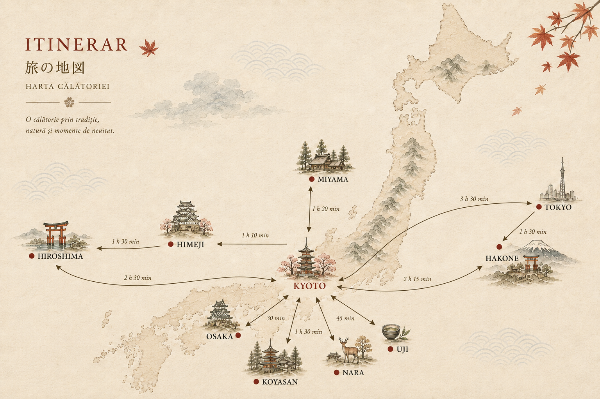

<!DOCTYPE html>
<meta charset="utf-8">
<title>日本の秋 · Jurnal de călătorie</title>
<meta name="viewport" content="width=device-width, initial-scale=1">
<style>
  :root{
    --hartie:#F5EFE4; --hartie2:#FFFCF6; --tus:#33302B; --gri:#8A8377;
    --artar:#C4452D; --kaki:#B07C2A; --ceai:#6E7A52; --indigo:#4A6274;
    --linie:#E2D8C6; --linie2:#EFE7D9;
  }
  *{box-sizing:border-box}
  body{margin:0;background:var(--hartie)}
  #app{color:var(--tus);font-family:"Helvetica Neue",Inter,system-ui,sans-serif;min-height:100vh;
       padding:26px 18px 90px;
       background-image:radial-gradient(circle at 90% 0%,rgba(196,69,45,.07),transparent 45%),
                        radial-gradient(circle at 5% 12%,rgba(110,122,82,.07),transparent 40%),
                        radial-gradient(circle at 40% 100%,rgba(176,124,42,.05),transparent 50%)}
  .wrap{max-width:1100px;margin:0 auto}

  .kanji{font-family:"Hiragino Mincho ProN","Yu Mincho",Georgia,serif;font-size:clamp(30px,6vw,46px);
         color:var(--artar);letter-spacing:.08em;margin:0;line-height:1.1}
  .kanji small{font-size:.42em;letter-spacing:.04em}
  h1{font-family:Georgia,serif;font-weight:400;font-size:clamp(15px,2.4vw,19px);letter-spacing:.2em;
     text-transform:uppercase;margin:8px 0 2px;color:var(--tus)}
  h2{font-family:Georgia,serif;font-weight:400;font-size:21px;margin:0 0 10px}
  .sub{color:var(--gri);font-size:12.5px;letter-spacing:.05em;margin:0 0 22px}
  .row{display:flex;gap:9px;flex-wrap:wrap;align-items:center}

  button{font:inherit;font-size:13px;letter-spacing:.04em;cursor:pointer;background:var(--hartie2);
    color:var(--tus);border:1px solid var(--linie);border-radius:2px;padding:9px 14px;
    transition:background .15s,border-color .15s,transform .15s,color .15s}
  button:hover{border-color:var(--artar)}
  button:focus-visible{outline:2px solid var(--kaki);outline-offset:2px}
  button.primary{background:var(--artar);border-color:var(--artar);color:#fff}
  button.primary:hover{background:#a83722}
  button.on{background:var(--tus);color:var(--hartie);border-color:var(--tus)}
  button[disabled]{opacity:.4;cursor:default}
  input,textarea,select{font:inherit;font-size:14px;background:var(--hartie2);color:var(--tus);
    border:1px solid var(--linie);border-radius:2px;padding:9px 11px;width:100%}
  textarea{min-height:64px;line-height:1.45;resize:vertical}
  label{display:block;font-size:10.5px;letter-spacing:.14em;text-transform:uppercase;color:var(--gri);margin:12px 0 5px}

  .tabs{display:flex;gap:22px;border-bottom:1px solid var(--linie);margin-bottom:20px;flex-wrap:wrap}
  .tab{padding:0 0 10px;border:0;border-bottom:2px solid transparent;border-radius:0;letter-spacing:.13em;
       text-transform:uppercase;font-size:10.5px;color:var(--gri);background:none}
  .tab:hover{background:none;color:var(--tus)}
  .tab.active{color:var(--artar);border-bottom-color:var(--artar)}
  .tab.star{color:var(--artar);font-weight:600}
  .tab.star .stea{margin-right:5px;font-size:9px;vertical-align:middle;opacity:.9}
  .tab.star:hover{color:#a83722}

  .panel{background:var(--hartie2);border:1px solid var(--linie);border-radius:3px;padding:18px;margin-bottom:14px}
  .note{font-size:12.5px;color:var(--gri);line-height:1.65}
  .frunze{list-style:none;margin:6px 0 4px;padding:0;display:flex;flex-direction:column;gap:9px}
  .frunze li{position:relative;padding-left:26px;font-size:14px;line-height:1.5;color:var(--tus)}
  .frunze li::before{content:"🍁";position:absolute;left:0;top:1px;font-size:13px;opacity:.85}

  /* ---------- pagina de deschidere (atmosferă „Toamna în Japonia”) ---------- */
  .hero{position:relative;overflow:hidden;border-radius:4px;border:1px solid var(--linie);
    background:
      radial-gradient(120% 90% at 85% -10%,rgba(196,69,45,.14),transparent 55%),
      radial-gradient(120% 90% at -10% 20%,rgba(176,124,42,.13),transparent 55%),
      radial-gradient(140% 120% at 50% 120%,rgba(110,122,82,.12),transparent 55%),
      linear-gradient(180deg,var(--hartie2),#FBF6EC);
    padding:40px 30px 34px;margin-bottom:16px}
  .hero .jpbig{font-family:"Hiragino Mincho ProN","Yu Mincho",serif;font-size:clamp(15px,3vw,20px);
    letter-spacing:.3em;color:var(--artar);opacity:.8;margin:0 0 14px}
  .hero h2{font-family:Georgia,serif;font-weight:400;font-size:clamp(26px,5vw,38px);line-height:1.2;
    margin:0 0 16px;color:var(--tus);max-width:16ch}
  .hero .lede{font-size:15px;line-height:1.72;color:#5C5346;max-width:52ch;margin:0 0 8px}
  .hero .lede .accent{color:var(--artar)}
  .hero .haiku{font-family:Georgia,serif;font-style:italic;font-size:15px;line-height:1.7;color:var(--kaki);
    border-left:2px solid rgba(176,124,42,.4);padding-left:16px;margin:20px 0 4px;max-width:44ch}
  .hero .meta-trip{display:flex;flex-wrap:wrap;gap:8px 10px;margin:22px 0 4px}
  .hero .chip{display:inline-flex;align-items:center;gap:7px;font-size:12.5px;color:#5C5346;
    background:rgba(255,255,255,.55);border:1px solid var(--linie);border-radius:99px;padding:6px 13px}
  .hero .chip b{font-weight:600;color:var(--tus)}
  /* frunze care cad, discret */
  .leaves{position:absolute;inset:0;pointer-events:none;overflow:hidden;z-index:0}
  .leaves span{position:absolute;top:-8%;font-size:18px;opacity:0;animation:cadere linear infinite;
    will-change:transform,opacity}
  @keyframes cadere{
    0%{opacity:0;transform:translateY(-10%) translateX(0) rotate(0deg)}
    10%{opacity:.75}
    90%{opacity:.6}
    100%{opacity:0;transform:translateY(720%) translateX(40px) rotate(320deg)}
  }
  .hero>*{position:relative;z-index:1}

  /* „ce urmează” — pași atmosferici */
  .pasi{display:grid;grid-template-columns:repeat(auto-fit,minmax(150px,1fr));gap:10px;margin:4px 0 2px}
  .pas{border:1px solid var(--linie);border-radius:3px;padding:12px 14px;background:var(--hartie2)}
  .pas .p-jp{font-family:"Hiragino Mincho ProN","Yu Mincho",serif;color:var(--artar);font-size:15px;opacity:.7}
  .pas b{display:block;font-family:Georgia,serif;font-weight:400;font-size:15px;margin:3px 0 2px;color:var(--tus)}
  .pas span{font-size:12px;color:var(--gri);line-height:1.5}
  .intra{max-width:560px}
  @media(prefers-reduced-motion:reduce){.leaves{display:none}}
  .meta{font-size:10px;letter-spacing:.16em;text-transform:uppercase;color:var(--gri);margin-bottom:8px}
  .hr{height:1px;background:var(--linie);margin:16px 0}

  /* ---------- notare (1-5) ---------- */
  .pref{border-bottom:1px solid var(--linie);padding:14px 2px}
  .pref:last-child{border-bottom:0}
  .pref .q{font-size:15px;line-height:1.45;margin-bottom:9px}
  .stars{display:flex;gap:3px;flex-wrap:wrap;align-items:center}
  .st{width:34px;height:36px;border:0;background:none;padding:0;font-size:26px;line-height:1;color:#DCD2C0}
  .st:hover{background:none;border:0;transform:translateY(-2px)}
  .st.fill{color:var(--artar)}
  .scoretag{font-size:12px;color:var(--gri);margin-left:8px}

  /* animație: la notare, cardul se estompează și se deplasează vizibil în față */
  @keyframes cardFadeMove{
    0%{opacity:1;transform:translateY(0) scale(1)}
    45%{opacity:.15;transform:translateY(-10px) scale(1.05)}
    100%{opacity:1;transform:translateY(0) scale(1)}
  }
  .card.reasezat{animation:cardFadeMove .55s ease}
  /* cardul „sosit” la noua poziție — scurtă evidențiere ca să se vadă unde a ajuns */
  @keyframes cardSosit{
    0%{opacity:.15;transform:translateY(8px) scale(.97)}
    100%{opacity:1;transform:translateY(0) scale(1)}
  }
  .card.sosit{animation:cardSosit .5s ease}

  /* ---------- carduri ---------- */
  .duel{display:grid;grid-template-columns:1fr 1fr;gap:16px}
  .grila{display:grid;grid-template-columns:repeat(auto-fill,minmax(300px,1fr));gap:16px}
  .card{background:var(--hartie2);color:var(--tus);border-radius:3px;text-align:left;padding:0;
    border:1px solid var(--linie);position:relative;display:flex;flex-direction:column;width:100%;
    box-shadow:0 8px 22px rgba(80,60,40,.09);transition:transform .18s,box-shadow .18s,border-color .18s}
  .card>.thumb{border-radius:2px 2px 0 0;overflow:hidden}
  .card.pick{cursor:pointer}
  .card.pick:hover{transform:translateY(-4px);box-shadow:0 14px 30px rgba(80,60,40,.16);border-color:var(--artar)}
  .card.static{box-shadow:0 4px 14px rgba(80,60,40,.07)}

  .thumb{position:relative;aspect-ratio:16/10;display:flex;align-items:center;justify-content:center;
         background-size:cover;background-position:center;overflow:hidden}
  .thumb.foto{filter:saturate(.82) contrast(1.05) sepia(.14)}
  .thumb.foto::after{content:"";position:absolute;inset:0;
    background:linear-gradient(to top,rgba(58,38,22,.42),rgba(58,38,22,.04) 55%);}
  .thumb.gol{background:
      radial-gradient(circle at 50% 118%,var(--acs),transparent 62%),
      repeating-linear-gradient(45deg,rgba(51,48,43,.045) 0 1px,transparent 1px 11px),
      repeating-linear-gradient(-45deg,rgba(51,48,43,.045) 0 1px,transparent 1px 11px),
      linear-gradient(160deg,#F4EBDB,#E7DAC4)}
  .thumb.gol::after{content:"";position:absolute;inset:0;box-shadow:inset 0 0 0 1px rgba(60,35,20,.06)}
  .thumb .ic{font-size:44px;line-height:1;opacity:.92;filter:saturate(.92)}
  .thumb .jp{position:absolute;right:10px;bottom:6px;font-family:"Hiragino Mincho ProN","Yu Mincho",serif;
    font-size:30px;color:var(--ac);opacity:.14;letter-spacing:.05em}

  .card .body{padding:15px 17px 18px;display:flex;flex-direction:column;gap:7px;flex:1}
  .card h3{margin:0;font-family:Georgia,serif;font-weight:400;font-size:19px;line-height:1.28}
  .kicker{display:flex;gap:8px;align-items:center;flex-wrap:wrap;font-size:9.5px;letter-spacing:.15em;
    text-transform:uppercase;color:var(--gri)}
  .kicker .dot{width:5px;height:5px;border-radius:50%;background:var(--ac);opacity:.8}
  .desc{font-size:13.5px;line-height:1.58;margin:0;color:#4A453C}
  .why{font-size:12.5px;line-height:1.55;color:#6B6558;border-left:2px solid var(--ac);padding-left:10px;margin:2px 0 0}
  .why b{display:block;font:400 9.5px/1.6 inherit;letter-spacing:.15em;text-transform:uppercase;color:var(--gri)}

  .stamp{position:absolute;top:10px;right:10px;width:56px;height:56px;border:2.5px solid var(--artar);
    border-radius:50%;color:var(--artar);font-family:Georgia,serif;font-size:13px;display:flex;align-items:center;
    justify-content:center;transform:rotate(-14deg) scale(0);opacity:0;background:rgba(255,255,255,.78)}
  .stamp.show{animation:stamp .45s ease-out forwards}
  @keyframes stamp{0%{transform:rotate(-40deg) scale(2);opacity:0}60%{opacity:1}100%{transform:rotate(-14deg) scale(1);opacity:1}}
  @media (prefers-reduced-motion:reduce){.stamp.show{animation:none;transform:rotate(-14deg) scale(1);opacity:1}
    .card.pick:hover{transform:none}.st:hover{transform:none}}
  .vs{text-align:center;font-family:Georgia,serif;letter-spacing:.26em;color:var(--gri);margin:14px 0 12px;font-size:11.5px}
  @media(max-width:680px){.duel{grid-template-columns:1fr}.thumb .ic{font-size:38px}}

  /* ---------- optiuni organizare ---------- */
  .opts{display:grid;grid-template-columns:repeat(auto-fit,minmax(230px,1fr));gap:10px}
  .opt{background:var(--hartie);border:1px solid var(--linie);border-radius:3px;padding:14px;text-align:left;display:block}
  .opt.sel{border-color:var(--artar);background:rgba(196,69,45,.08)}
  .opt b{display:block;font-family:Georgia,serif;font-weight:400;font-size:16px;margin-bottom:5px}
  .opt span{display:block;font-size:12.5px;line-height:1.5;color:#5F594D}
  .opt em{display:block;font-style:normal;font-size:11.5px;margin-top:6px;color:var(--kaki);line-height:1.45}

  /* ---------- rezultate ---------- */
  .rank{display:flex;align-items:center;gap:12px;padding:10px 0;border-bottom:1px solid var(--linie)}
  .rank:last-child{border-bottom:0}
  .num{font-family:Georgia,serif;font-size:20px;color:var(--kaki);min-width:34px}
  .bar{height:5px;background:#EAE1D2;border-radius:3px;overflow:hidden;margin-top:5px}
  .bar i{display:block;height:100%;background:var(--artar)}
  .small{font-size:11.5px;color:var(--gri)}
  .pill{display:inline-block;font-size:10px;letter-spacing:.1em;text-transform:uppercase;border:1px solid var(--linie);
        border-radius:99px;padding:3px 9px;margin:0 6px 6px 0;color:#5F594D}
  .ed{border:1px dashed var(--linie);border-radius:3px;padding:14px;margin-bottom:10px;background:var(--hartie2)}
  .two{display:grid;grid-template-columns:1fr 1fr;gap:10px}
  @media(max-width:640px){.two{grid-template-columns:1fr}}
  .status{position:fixed;left:0;right:0;bottom:0;background:var(--tus);color:var(--hartie);
    font-size:12px;padding:8px 16px;text-align:center;transform:translateY(100%);transition:transform .25s}
  .status.on{transform:none}

  /* ---------- sectiuni pe categorii + nota pe card ---------- */
  .catsec{margin:28px 0 14px}
  .cathead{font-family:Georgia,serif;font-weight:400;font-size:19px;margin:0 0 3px;color:var(--tus);
    display:flex;align-items:baseline;gap:10px;border-bottom:1px solid var(--linie);padding-bottom:7px}
  .cathead .n{font-size:10.5px;letter-spacing:.15em;text-transform:uppercase;color:var(--gri)}
  .catdesc{font-size:12.5px;color:var(--gri);line-height:1.55;margin:9px 0 14px;max-width:660px}
  .orasbio{font-family:Georgia,serif;font-size:15px;line-height:1.72;color:#4A453C;max-width:70ch;
    border-left:3px solid var(--ac);padding:2px 0 2px 16px;margin:4px 0 18px}
  .cardnote{border-top:1px solid var(--linie);padding:12px 17px 15px;display:flex;flex-direction:column;gap:4px;
    background:rgba(196,69,45,.02)}
  .cardnote .ql{font-size:10px;letter-spacing:.13em;text-transform:uppercase;color:var(--gri)}
  .callout{border-left:3px solid var(--artar);background:rgba(196,69,45,.05);padding:12px 15px;border-radius:2px;
    font-size:13.5px;line-height:1.55;margin-top:10px}
  .orasnav{display:flex;justify-content:space-between;align-items:center;gap:10px;flex-wrap:wrap;
    margin:24px 0 4px;padding-top:16px;border-top:1px solid var(--linie)}
  .orasnav button{padding:10px 16px}
  .orasnav .primary{margin-left:auto}
  @media(max-width:520px){.orasnav .primary{width:100%;margin-left:0}}

  /* ---------- propunere itinerariu ---------- */
  .trip{display:flex;flex-direction:column;gap:0}
  .leg{display:grid;grid-template-columns:60px 1fr;gap:16px;position:relative;padding:0 0 6px}
  .leg .rail{display:flex;flex-direction:column;align-items:center}
  .leg .knob{width:14px;height:14px;border-radius:50%;background:var(--ac,--artar);margin-top:6px;flex:none;
    box-shadow:0 0 0 4px var(--hartie2),0 0 0 5px var(--linie)}
  .leg .line{width:2px;flex:1;background:var(--linie);margin-top:4px}
  .leg:last-child .line{display:none}
  .leg .content{padding:0 0 20px}
  .leg .nights{font-family:Georgia,serif;font-size:11px;letter-spacing:.14em;text-transform:uppercase;color:var(--gri)}
  .leg h3{margin:2px 0 3px;font-family:Georgia,serif;font-weight:400;font-size:21px}
  .leg .dates{font-size:12px;color:var(--kaki);letter-spacing:.03em;margin-bottom:6px}
  .leg .placeholder{font-size:12.5px;color:var(--gri);line-height:1.55;border:1px dashed var(--linie);
    border-radius:3px;padding:11px 13px;background:var(--hartie2)}
  .leg .planjoke{font-family:Georgia,serif;font-size:13.5px;letter-spacing:.06em;color:var(--ac);
    line-height:1.6;border:1px solid var(--ac);border-radius:3px;padding:11px 13px;
    background:rgba(196,69,45,.05);font-weight:600}
  .harta{width:100%;display:block;border-radius:3px;border:1px solid var(--linie)}
  .hubgrid{display:grid;grid-template-columns:repeat(auto-fill,minmax(150px,1fr));gap:9px;margin-top:10px}
  .hub{border:1px solid var(--linie);border-radius:3px;padding:10px 12px;background:var(--hartie2)}
  .hub b{display:block;font-family:Georgia,serif;font-weight:400;font-size:14px;margin-bottom:2px}
  .hub span{font-size:11px;color:var(--gri)}

  /* ---------- japoneza pe scurt ---------- */
  .frazcat{margin:22px 0 12px}
  .frazcat h3{margin:0 0 3px;font-family:Georgia,serif;font-weight:400;font-size:20px}
  .frazcat h3 .jpsmall{font-family:"Hiragino Mincho ProN","Yu Mincho",serif;color:var(--artar);margin-left:8px;font-size:16px}
  .frazcat p.intro{margin:0;font-size:13px;color:var(--gri);line-height:1.5}
  .frazgrid{display:grid;grid-template-columns:repeat(auto-fill,minmax(255px,1fr));gap:10px}
  .fraz{border:1px solid var(--linie);border-left:3px solid var(--ac,var(--artar));border-radius:3px;
    padding:11px 14px;background:var(--hartie2)}
  .fraz .jp{font-family:"Hiragino Mincho ProN","Yu Mincho",serif;font-size:19px;line-height:1.25;color:var(--tus)}
  .fraz .ro{font-size:13.5px;color:var(--tus);margin-top:3px;line-height:1.4}
  .fraz .romaji{font-size:11px;letter-spacing:.04em;text-transform:uppercase;color:var(--kaki);margin-top:5px;font-weight:600}

  /* ---------- comentarii per oraș ---------- */
  .comente{margin-top:22px}
  .cmt-fir{display:flex;flex-direction:column;gap:10px;margin-bottom:16px}
  .cmt{border:1px solid var(--linie);border-left:3px solid var(--linie);border-radius:3px;padding:10px 13px;background:var(--hartie2)}
  .cmt.al-meu{border-left-color:var(--artar);background:rgba(196,69,45,.03)}
  .cmt-cap{display:flex;align-items:baseline;gap:9px;margin-bottom:3px}
  .cmt-nume{font-family:Georgia,serif;font-size:14px;color:var(--tus)}
  .cmt-data{font-size:11px;color:var(--gri)}
  .cmt-text{font-size:14px;line-height:1.5;color:var(--tus);white-space:pre-wrap}
  .cmt-act{margin-top:6px;display:flex;gap:12px}
  .linkbtn{background:none;border:0;padding:0;font-size:12px;color:var(--kaki);cursor:pointer;text-decoration:underline}
  .linkbtn.del{color:var(--artar)}
  .linkbtn:hover{opacity:.75}
  .cmt-nou textarea,.cmt-edit{width:100%;border:1px solid var(--linie);border-radius:3px;padding:9px 11px;
    font-family:inherit;font-size:14px;color:var(--tus);background:var(--hartie);resize:vertical;line-height:1.5}
  .cmt-nou textarea:focus,.cmt-edit:focus{outline:none;border-color:var(--artar)}
  button.sm{padding:5px 12px;font-size:12px}
</style>
<div id="app"><div class="wrap" id="root"></div></div>
<div class="status" id="status"></div>
<script>
/* ============================================================================
   ① LEGĂTURA CU GOOGLE SHEETS
   Lipește aici linkul aplicației web din Apps Script (vezi GHID.md).
   Dacă îl lași gol, aplicația merge în continuare, dar răspunsurile rămân
   doar pe telefonul fiecăruia.
   ========================================================================== */
const URL_SCRIPT = "https://script.google.com/macros/s/AKfycbza_AKsZh8KuIF5DYiwB9jdQfaA_4Et7o1gs-32oMwc0jKhYxEGOVe5zxyazxE4DmQBSg/exec";

/* ============================================================================
   ② ZONA DE EDITAT — CONȚINUTUL TĂU
   ========================================================================== */

/* câte un „fișier” per oraș, în ordinea firească a călătoriei */
const ORASE = ["Tokyo","Hakone","Kyoto","Nara","Osaka","Hiroshima","Uji","Excursii"];

/* culoare + kanji decorativ pentru fiecare oraș */
const ORAS_STIL = {
  "Tokyo":     {ac:"#C4452D", acs:"rgba(196,69,45,.14)",  jp:"東京"},
  "Hakone":    {ac:"#4A6274", acs:"rgba(74,98,116,.15)",  jp:"箱根"},
  "Kyoto":     {ac:"#6E7A52", acs:"rgba(110,122,82,.15)", jp:"京都"},
  "Nara":      {ac:"#8A6D3B", acs:"rgba(138,109,59,.15)", jp:"奈良"},
  "Osaka":     {ac:"#B07C2A", acs:"rgba(176,124,42,.15)", jp:"大阪"},
  "Hiroshima": {ac:"#5A7A6E", acs:"rgba(90,122,110,.15)", jp:"広島"},
  "Uji":       {ac:"#5E7A3E", acs:"rgba(94,122,62,.15)",  jp:"宇治"},
  "Excursii":  {ac:"#9A5A44", acs:"rgba(154,90,68,.15)",  jp:"遠足"}
};

/* BIO scurt pentru fiecare oraș — dă tonul, fără titlu, ca o mică introducere în atmosferă */
const ORAS_BIO = {
  "Tokyo":"Cel mai mare oraș al lumii nu obosește niciodată: temple vechi de secole la câțiva pași de intersecții pline de neon, cartiere care se schimbă complet de la o stradă la alta și cele mai bune restaurante de pe planetă, de la tarabe de ramen la mese cu stele. Îl luăm în doi timpi — zilele de la început, în priză, și două seri liniștite la final — și tot n-o să ne ajungă. Aici stă și partea de program cultural: concerte, teatru, un balet-premieră fix în zilele noastre.",
  "Hakone":"După forfota din Tokyo, Hakone e locul unde încetinim. Un ținut de munte cu izvoare fierbinți, unde ziua se termină cufundat până la gât în apă termală, cu aburul ridicându-se în aerul răcoros de toamnă și, pe vreme bună, Fuji la orizont. Dormim într-un ryokan tradițional, mâncăm o cină lungă în odaie și nu ne grăbim nicăieri.",
  "Kyoto":"Fostă capitală imperială timp de peste o mie de ani, Kyoto e inima veche a Japoniei — orașul cu mii de temple, grădini de mușchi, cartiere de gheișe și ceremonii ale ceaiului care se fac la fel de secole. E și tabăra noastră de bază pentru toată regiunea: de aici pornim, dimineața, spre orașele din jur și ne întoarcem seara în același pat. Ne așezăm aici o săptămână, ca să-l descoperim pe îndelete.",
  "Nara":"Prima capitală permanentă a Japoniei, mai veche chiar decât Kyoto, la o azvârlitură de băț cu trenul. Peste tot, temple monumentale și un Buddha de bronz uriaș — dar vedetele orașului sunt cele peste o mie de căprioare care umblă libere prin parc și au învățat să se încline pentru un biscuit. O excursie de o zi, veselă și plină de verde.",
  "Osaka":"Dacă Kyoto e eleganța, Osaka e pofta de viață. Orașul-bucătărie al Japoniei, gălăgios și prietenos, cu neoane reflectate în canale și un cuvânt propriu pentru felul lui de a mânca: kuidaore, „a mânca până cazi”. Mergem pentru o seară de street food și lumini — takoyaki, okonomiyaki, kushikatsu — și pentru energia lui contagioasă.",
  "Hiroshima":"Un oraș care poartă cea mai grea poveste a secolului XX și a ales să devină un simbol al păcii. Memorialul e o vizită apăsătoare, dar de neuitat. La câțiva pași, cu feribotul, se ajunge la Miyajima și la faimoasa poartă torii roșie care pare că plutește pe mare — un contrast blând, care echilibrează ziua.",
  "Uji":"La numai douăzeci de minute cu trenul de Kyoto, orășelul care e, de secole, capitala ceaiului matcha din Japonia. Aici se macină cele mai fine pudre de ceai, la pietre de granit, iar templul Byodo-in — cel de pe moneda de 10 yeni — se oglindește într-un iaz de aproape o mie de ani. O jumătate de zi de liniște și ceai proaspăt.",
  "Excursii":"Frumusețea itinerariului nostru e că stăm mult și mutăm bagajele puțin. Din Kyoto și Tokyo pornim în excursii de o zi și ne întoarcem seara în același pat — castele, sate de munte, muntele Fuji, orașe de pe coastă. Aici am strâns aceste escapade și gustările de drum care fac călătoria cu trenul jumătate din farmec."
};

/* CATEGORII — se afișează în această ordine în fiecare fișier (fără butoane) */
const CATEGORII = [
  {id:"atractie",   nume:"Atracții turistice"},
  {id:"activitate", nume:"Activități"},
  {id:"culinar",    nume:"Experiențe gastronomice"},
  {id:"zona",       nume:"Zone & plimbări"}
];

/* Categorii speciale, doar pentru fișierul „Excursii” */
const CATEGORII_EXCURSII = [
  {id:"x_kansai",  nume:"Excursii din Kyoto"},
  {id:"x_tokyo",   nume:"Excursii din Tokyo"},
  {id:"x_gustari", nume:"Gustări japoneze, la drum"}
];

/* categorie unică, neutră — pentru orașe care nu au nevoie de grupare pe categorii
   (nume gol = nu se afișează niciun titlu de secțiune) */
const CATEGORII_SIMPLE = [
  {id:"loc", nume:""}
];

/* ce set de categorii folosim pentru un oraș */
const ORASE_SIMPLE = ["Hiroshima","Uji"];
const categoriiPentru = o =>
  o==="Excursii" ? CATEGORII_EXCURSII :
  ORASE_SIMPLE.includes(o) ? CATEGORII_SIMPLE :
  CATEGORII;
const TOATE_CATEGORIILE = CATEGORII.concat(CATEGORII_EXCURSII).concat(CATEGORII_SIMPLE);

/* PREFERINȚE GENERALE (notă 1–10) — ordonate logic: ce vizităm · ce mâncăm · ritm & logistică */
let PREFERINTE = [
  /* — ce vizităm & ce facem — */
  {id:"p1",  text:"Cât de mult vrei să vedem temple și sanctuare?"},
  {id:"p13", text:"Cât de mult te atrag experiențele tradiționale japoneze (ritualul ceaiului, probarea kimonoului, ore de caligrafie)?"},
  {id:"p10", text:"Cât de mult te atrag muzeele de istorie și artă japoneză?"},
  {id:"p2",  text:"Cât de mult vrei să ieșim în natură — munte, pădure, parcuri?"},
  {id:"p9",  text:"Cât de mult dorești să explorezi viața urbană din Tokio pe timp de noapte — lumini neon, baruri (izakaya), străzi aglomerate?"},
  {id:"p11", text:"Cât de mult îți dorești să avem timp de shopping (pentru haine, cadouri, suveniruri) și să explorăm faimosul cartier de shopping - Ginza?"},
  {id:"p15", text:"Cât de mult preferi să vizitezi locuri frumoase, dar mai puțin cunoscute, în schimbul atracțiilor faimoase și aglomerate?"},
  /* — ce mâncăm — */
  {id:"p3",  text:"Cât de mult vrei să mergem într-o dimineață la piață, pentru a gusta ton proaspăt, stridii, și alte produse maritime?"},
  {id:"p4",  text:"Cât de mult vrei să încercăm diverse produse din bucătăria tradițională japoneză (în afară de sushi)?"},
  {id:"p5",  text:"Cât de mult te atrag deserturile și patiseria japoneză?"},
  /* — ritm & logistică — */
  {id:"p12", text:"Cât de mult vrei să avem zile lejere, cu pauze și timp liber de a savura momentul?"},
  {id:"p7",  text:"Cât de dispusă/dispus ești să ne trezim foarte devreme, pentru a evita aglomerația de turiști (adică la 6 dimineața)?"},
  {id:"p8",  text:"Cât de important e să avem onsen și saună la fiecare hotel? (Onsen este o baie termală tradițională japoneză alimentată de izvoare geotermale naturale bogate în minerale)"},
  {id:"p6",  text:"Cât de mult preferi taxiul între destinații, față de transportul public, chiar dacă e mai scump?"}
];

/* CARDURI — generate din baza de date de activități (alegerile DA / POATE)
   oras     — orașul (fișierul) în care apare cardul
   cat      — categoria: "atractie" | "activitate" | "culinar" | "zona"
              (la „Excursii”: "x_kansai" | "x_tokyo" | "x_gustari")
   alegere  — "da"  (ai bifat DA în tabel)  |  "poate" (ai bifat Poate)
   img      — numele fișierului din folderul de GitHub (ex. "shibuya_sky.jpg"); gol = fundal decorativ
   tag      — două-trei cuvinte: tipul experienței
   timp     — cât durează, orientativ
   desc     — ce este experiența
   dece     — de ce merită + (dacă e cazul) ce e de luat în calcul                */
let CARDURI = [
 /* =====================================================================
    TOKYO
    ===================================================================== */
 /* -- Zone & plimbări -- */
 {id:"t_asakusa",oras:"Tokyo",cat:"zona",alegere:"da",titlu:"Asakusa & Yanaka — Tokyo-ul vechi",emoji:"🏮",img:"asakusa.jpg",tag:"Cartier",timp:"jumătate de zi",
  desc:"Colțul de nord-est unde orașul își păstrează chipul de altădată: străduțe joase în jurul templului Senso-ji, iar puțin mai încolo Yanaka — unul dintre puținele cartiere care au scăpat și de marele cutremur din 1923, și de bombardamentele din război. Așa a rămas cu atelierele lui vechi, cu pisicile pe ziduri și cu un cimitir liniștit plin de arțari, un fel de capsulă a Tokyo-ului de acum un secol.",
  dece:"E cel mai plat și mai atmosferic mod de a simți Japonia tradițională, fără trepte și fără bilet. Weekendul aglomerează zona Senso-ji — mai bine dimineața."},
 {id:"t_shibuya",oras:"Tokyo",cat:"zona",alegere:"da",titlu:"Shibuya — intersecția și Center-gai",emoji:"🏙️",img:"shibuya_crossing.jpeg",tag:"Cartier",timp:"2 ore",
  desc:"Inima tânără a orașului: celebra intersecție diagonală prin care, la fiecare verde, trec din toate direcțiile mii de oameni deodată — cea mai filmată trecere de pietoni din lume. Chiar lângă gară stă statuia lui Hachiko, câinele care și-a așteptat stăpânul mort aproape zece ani la rând și care a devenit simbolul fidelității în Japonia și locul de întâlnire preferat al orașului.",
  dece:"E energia pură a Tokyo-ului și punctul din care pornesc multe seri. E și cea mai mare mulțime din oraș, deci nu e locul unde ne odihnim — mai degrabă de traversat și savurat câteva ore."},
 {id:"t_golden",oras:"Tokyo",cat:"zona",alegere:"da",titlu:"Shinjuku — Golden Gai & Kabukicho",emoji:"🍶",img:"golden_gai.jpg",tag:"Seara",timp:"2–3 ore",
  desc:"Neonul clasic al Tokyo-ului de noapte: în Kabukicho ecranele luminează cât fațadele, iar alături, în Golden Gai, șase alei înghesuite au scăpat ca prin minune de buldozerele care au ras tot în jur. Aici, peste două sute de baruri minuscule — fostă zonă de piață neagră postbelică, azi cartier boem — își păstrează fiecare obsesia: jazz, punk, filme vechi, și cam șase locuri la tejghea.",
  dece:"De aici pleacă povestea pe care o repeți un an, umăr la umăr cu barmanul. De luat în calcul: multe baruri au o mică taxă de masă, iar un grup de șase nu încape aproape nicăieri deodată — ne împărțim."},
 {id:"t_ginza",oras:"Tokyo",cat:"zona",alegere:"da",titlu:"Ginza — bulevardul de argint",emoji:"🛍️",img:"ginza.jpg",tag:"Cartier",timp:"2–3 ore",
  desc:"Cartierul elegant al Tokyo-ului, ridicat chiar pe locul unei monetării de argint din secolul al XVII-lea — de acolo îi vine și numele, „locul argintului”. Bulevarde largi și plate, arhitectură de firmă, magazine mari și restaurante fine; în weekend, artera principală se închide traficului și devine un „paradis al pietonilor”. E printre cele mai scumpe terenuri din lume.",
  dece:"E locul potrivit pentru shopping fără îmbulzeală și pentru o masă rafinată de aniversare, totul pe teren plat. E scump — dar plimbarea și vitrinele sunt gratis."},
 {id:"t_gyoen",oras:"Tokyo",cat:"zona",alegere:"da",titlu:"Rikugien — grădina poeziei",emoji:"🍁",img:"rikugien.jpg",tag:"Grădină",timp:"1–2 ore",
  desc:"O grădină clasică din 1702, al cărei nume trimite la „cele șase principii ale poeziei”: a fost gândită ca să recreeze, în miniatură, optzeci și opt de scene din poeme celebre japoneze și chinezești, ca o plimbare în jurul unui iaz cu dealuri, poduri și ceainării. Toamna, arțarii se aprind în roșu intens, iar în sezonul de vârf grădina e iluminată și seara.",
  dece:"E una dintre cele mai frumoase grădini de toamnă din Tokyo, cu alei plate și bănci — liniște pură în oraș. Are o taxă mică de intrare; în weekendurile din sezonul frunzelor se aglomerează."},
 {id:"t_harajuku",oras:"Tokyo",cat:"zona",alegere:"poate",titlu:"Harajuku & Omotesando",emoji:"🎀",img:"harajuku.jpg",tag:"Cartier",timp:"jumătate de zi",
  desc:"Două fețe lipite una de alta: strada Takeshita, îngustă și colorată, leagănul modei de stradă a adolescenților japonezi, cu clătite (crêpes) la fiecare pas, și, alături, bulevardul Omotesando — „Champs-Élysées-ul Tokyo-ului” — larg și elegant, mărginit de arhitectură semnată de nume mari.",
  dece:"E cel mai rapid contrast dintre Japonia excentrică și cea rafinată. Takeshita e foarte aglomerată — de luat mai mult ca priveliște decât ca loc de stat."},
 {id:"t_akihabara",oras:"Tokyo",cat:"zona",alegere:"poate",titlu:"Akihabara — orașul electric",emoji:"🎮",img:"akihabara.jpg",tag:"Cartier",timp:"2–3 ore",
  desc:"Poreclit „Orașul Electric”, cartierul a crescut dintr-o piață neagră de piese de radio de după război și a devenit capitala mondială a culturii anime, manga și gaming: turnuri de magazine cu figurine și gadgeturi, saloane de arcade pe mai multe etaje, cafenele tematice și firme luminoase de sus până jos.",
  dece:"E cel mai vibrant colț geek al Tokyo-ului, spectaculos chiar și doar de privit. E aglomerat și zgomotos — mai mult de explorat la pas decât de stat pe îndelete."},

 /* -- Atracții principale -- */
 {id:"t_senso",oras:"Tokyo",cat:"atractie",alegere:"da",titlu:"Senso-ji & Nakamise",emoji:"⛩️",img:"senso_ji.avif",tag:"Templu",timp:"2 ore",
  desc:"Cel mai vechi templu din Tokyo. Legenda spune că doi frați pescari au scos din râul Sumida, în anul 628, o statuetă de aur a zeiței milei, Kannon — iar templul a fost ridicat în 645 ca să o adăpostească. Sub poarta Kaminarimon atârnă un felinar roșu uriaș, iar de la ea până la templu se întinde Nakamise, o alee de tarabe vechi de generații, cu prăjituri calde, evantaie și suveniruri.",
  dece:"E imaginea clasică a Tokyo-ului vechi și e gratis, iar seara, când se golește și se aprind felinarele, e chiar frumos. Ziua e un fluviu de oameni — merită venit devreme dimineața sau după lăsarea serii."},
 {id:"t_palat",oras:"Tokyo",cat:"atractie",alegere:"poate",titlu:"Palatul Imperial & Grădinile de Est",emoji:"🏯",img:"imperial_palace.jpg",tag:"Grădină",timp:"2 ore",
  desc:"Grădinile fostului castel Edo, în centrul geografic al orașului — cândva cel mai mare castel din lume și reședința shogunilor. În anii bulei imobiliare, se spunea că terenul dinăuntrul acestor ziduri valorează mai mult decât toate imobilele din California. Au rămas zidurile de piatră ciclopice, peluzele întinse și urmele fostei fortărețe.",
  dece:"E o oră de verde plat și liniștit în plin centru, gratis. De știut: palatul propriu-zis nu se vizitează, doar grădinile din jur."},
 {id:"t_shibuyasky",oras:"Tokyo",cat:"atractie",alegere:"da",titlu:"Shibuya Sky la apus",emoji:"🌆",img:"shibuya_sky.jpg",tag:"Panoramă",timp:"1–2 ore",
  desc:"Ultimul nivel al zgârie-norului Shibuya Scramble Square, la 230 de metri: nu o cameră cu geamuri, ci o terasă complet descoperită, cu iarbă, șezlonguri, vânt și un colț de sticlă de unde privești drept în jos, în celebra intersecție. Pe vreme senină, Fuji apare peste acoperișuri.",
  dece:"E singurul loc din Tokyo unde vezi orașul mișcându-se sub tine. Intervalul de apus se epuizează cu săptămâni înainte — biletul se ia din timp."},
 {id:"t_meiji",oras:"Tokyo",cat:"atractie",alegere:"poate",titlu:"Meiji Jingu",emoji:"⛩️",img:"meiji_jingu.jpg",tag:"Sanctuar",timp:"jumătate de zi",
  desc:"Sanctuar shinto dedicat împăratului Meiji, ascuns într-o pădure de vreo sută de mii de copaci donați din toată Japonia și plantați cu totul de mână, acum un secol, ca să devină o pădure „veșnică”, care se întreține singură. La Anul Nou atrage cea mai mare mulțime din țară — peste trei milioane de oameni în primele zile. La intrare stau înșirate butoaie de sake (și de vin) oferite drept ofrandă.",
  dece:"E cel mai rapid contrast dintre Japonia veche și cea nouă (la ieșire începe agitația din Harajuku), e gratis și aproape numai mers pe jos. Aleile sunt cu pietriș — de purtat încălțăminte comodă."},
 {id:"t_skytree",oras:"Tokyo",cat:"atractie",alegere:"poate",titlu:"Tokyo Skytree",emoji:"🗼",img:"tokyo_skytree.jpg",tag:"Panoramă",timp:"1–2 ore",
  desc:"Cel mai înalt turn din Japonia și a doua cea mai înaltă construcție din lume — 634 de metri, un număr ales ca un joc de cuvinte: 6-3-4 se citește „mu-sa-shi”, vechiul nume al ținutului Tokyo. Are două niveluri de observație închise, la 350 și la 450 de metri, legate de o rampă în spirală cu porțiuni de podea din sticlă.",
  dece:"E cea mai înaltă priveliște pe care o poți cumpăra în Japonia și singura care merge la fel de bine pe ploaie. Fiind închis cu geamuri, se vede enorm, dar se simte mai puțin viu decât la Shibuya Sky."},
 {id:"t_toyosu",oras:"Tokyo",cat:"atractie",alegere:"da",titlu:"Piața Toyosu & licitația de ton",emoji:"🐟",img:"toyosu.jpg",tag:"Piață",timp:"2 ore, dis-de-dimineață",
  desc:"Piața en-gros de pește a Tokyo-ului, mutată aici în 2018 din vechiul Tsukiji: hale imense unde se cântărește tonul în zori și de unde se poate privi de sus faimoasa licitație, plus restaurante mici cu sushi la micul dejun. Aici pot fi vândute exemplare uriașe de ton, la prețuri record.",
  dece:"E cea mai autentică față a orașului, unde se lucrează, nu se pozează. De luat în calcul: se merge foarte devreme, iar la licitația propriu-zisă se intră doar cu rezervare sau prin loterie."},

 /* -- Activități -- */
 {id:"t_ghid",oras:"Tokyo",cat:"activitate",alegere:"poate",titlu:"Tur privat cu ghid pe cartiere",emoji:"🧭",img:"private_tour.jpg",tag:"Cu ghid",timp:"jumătate de zi",
  desc:"Un ghid licențiat ne conduce pe cartierele alese, în ritmul grupului, explicând ce vedem și rezolvând mersul cu transportul — util mai ales într-un oraș atât de mare, unde metroul poate fi copleșitor la prima vedere.",
  dece:"Scoate tot stresul logistic dintr-o zi și e ideal pentru un grup de șase cu ritmuri diferite. Costă și cere rezervare din timp — de decis dacă vrem o zi cu totul „ghidată”."},
 {id:"t_sumida",oras:"Tokyo",cat:"activitate",alegere:"da",titlu:"Croazieră pe râul Sumida",emoji:"⛵",img:"sumida.webp",tag:"Pe apă",timp:"40 de minute",
  desc:"Vaporaș care coboară pe râul Sumida între Asakusa și grădina Hamarikyu, pe sub poduri vopsite fiecare altfel, cu Skytree crescând în spate. Unele nave — Himiko și Hotaluna — arată ca niște picături futuriste, desenate de un legendar autor de manga.",
  dece:"E transportul care e de fapt o atracție: costă cât un bilet de metrou, odihnește picioarele și oferă cel mai bun unghi spre turn. Dacă plouă tare, priveliștea se pierde."},
 {id:"t_karaoke",oras:"Tokyo",cat:"activitate",alegere:"da",titlu:"Karaoke în cameră privată",emoji:"🎤",img:"karaoke.webp",tag:"Seara",timp:"1–2 ore",
  desc:"Karaoke japonez adevărat înseamnă o cameră doar a grupului, nu o scenă în fața străinilor: comanzi băuturi la telefon, alegi din zeci de mii de melodii (multe și în engleză) și cânți cât plătești, de obicei la oră. Cuvântul înseamnă chiar „orchestră goală”, iar aparatul a fost inventat în Japonia prin 1971.",
  dece:"E cea mai bună supapă pentru un grup obosit și puțin timid — după prima melodie cade orice reținere. Se plătește pe oră și de persoană; în weekend seara, camerele mari se ocupă repede, deci merită rezervat."},
 {id:"t_sumo",oras:"Tokyo",cat:"activitate",alegere:"da",titlu:"Antrenament de sumo în zori",emoji:"🤼",img:"sumo2.jpg",tag:"Cultură",timp:"2 ore, foarte devreme",
  desc:"Luptătorii de sumo trăiesc laolaltă în „grajduri” (heya), sub o ierarhie strictă, iar antrenamentul de dimineață începe în zori. Se intră cu ghid, se stă jos pe podea, în tăcere, la câțiva metri de ring, cât timp ei repetă aceleași ciocniri, ore în șir.",
  dece:"E sport adevărat, fără ambalaj turistic — sunetul din sală rămâne cu tine. De luat în calcul: e foarte devreme, se stă nemișcat și nu se vorbește, deci nu e pentru toată lumea."},
 {id:"t_kabukiza",oras:"Tokyo",cat:"activitate",alegere:"poate",titlu:"Kabukiza — teatru kabuki",emoji:"🎎",img:"kabukiza.webp",tag:"Teatru · zilnic",timp:"1 act (1–2 ore) sau spectacol întreg",
  desc:"Teatrul emblematic de kabuki din Ginza, cu costume somptuoase, machiaje dramatice și gesturi stilizate. Are spectacole în fiecare zi, cu un program nou în fiecare lună (de obicei matineu și seara). Pentru turiști există biletul „hitomaku-mi” — un singur act, 500–2.000 ¥, cumpărat doar în ziua respectivă, la fața locului.",
  dece:"E cel mai accesibil mod de a gusta kabuki: fiind zilnic, îl prindem ușor în orice zi, iar biletul de un act nu cere rezervare. Nu are subtitrări (se închiriază căști cu traducere, contra cost); la actele populare, coada la biletul de-o zi se formează devreme."},
 {id:"t_gala",oras:"Tokyo",cat:"activitate",alegere:"da",titlu:"Suntory Hall — Concertul GALA la 40 de ani",emoji:"🎼",img:"suntory_hall.jpg",tag:"Concert · 31 oct & 1 nov",timp:"o seară (de la 16:00)",
  desc:"Cea mai prestigioasă sală de concerte clasice din Tokyo, deschisă în 1986 (de aici cei 40 de ani) și lăudată de Karajan, care i-a îndrumat acustica, drept „o cutie de bijuterii a sunetului”. Aniversarea e marcată cu un concert-gală: Riccardo Muti dirijează Filarmonica din Viena, cu Mitsuko Uchida la pian, în doar două seri — 31 octombrie și 1 noiembrie 2026, ambele de la ora 16:00 — exact la începutul șederii noastre.",
  dece:"E un eveniment irepetabil, într-o acustică legendară — perfect pentru aniversare. Tocmai fiindcă e unic, biletele se epuizează foarte repede: de luat din timp, imediat ce se pun în vânzare."},
 {id:"t_chaplin",oras:"Tokyo",cat:"activitate",alegere:"da",titlu:"City Lights — balet după Chaplin",emoji:"🎭",img:"city_lights.jpg",tag:"Balet · 23 oct – 1 nov",timp:"o seară",
  desc:"Premiera mondială a unui balet nou, creat de Baletul Național al Japoniei după filmul „City Lights” („Luminile orașului”) al lui Charlie Chaplin — chiar pe muzica scrisă de Chaplin, adaptată pentru orchestră live. Poveste fără cuvinte, ușor de urmărit indiferent de limbă. Se joacă la New National Theatre, între 23 octombrie și 1 noiembrie 2026 (ultima reprezentație, pe 1 nov, de la 14:00).",
  dece:"E prima oară în lume când se montează acest balet — o premieră absolută, prinsă fix în fereastra noastră de date. Fiind un eveniment special și cu puține reprezentații, biletele se iau din timp."},
 {id:"t_cotton",oras:"Tokyo",cat:"activitate",alegere:"da",titlu:"Cotton Club — concert de jazz la masă",emoji:"🎷",img:"cotton_club.jpg",tag:"Jazz · în fiecare seară",timp:"o seară",
  desc:"Club de jazz intim în stil newyorkez, în Marunouchi (lângă Gara Tokyo), unde asculți muzică live stând la masă, cu cină și băuturi. Are program în fiecare seară, cu artiști diferiți — de obicei două reprezentații (în jur de 17:00 și 19:00), iar un artist cântă adesea câteva seri la rând.",
  dece:"E o seară elegantă și relaxată, perfectă pentru un moment special în grup. Programul din noiembrie 2026 se anunță mai aproape de dată — merită verificat cine cântă și rezervată masa din timp, sala fiind mică."},

 /* -- Experiențe culinare -- */
 {id:"t_tsukiji",oras:"Tokyo",cat:"culinar",alegere:"da",titlu:"Micul dejun la Tsukiji Outer Market",emoji:"🍣",img:"tsukiji.jpg",tag:"Mâncare",timp:"2 ore, dimineața",
  desc:"Piața interioară s-a mutat la Toyosu, dar străzile exterioare din Tsukiji au rămas ce erau: sute de tarabe și bucătării mici unde se mănâncă în picioare — tamagoyaki cald înfipt în bețișor, scoici pe grătar, uni proaspăt, brochete de wagyu.",
  dece:"Ieftin, haotic și democratic: fiecare mănâncă exact ce vrea, fără meniu comun. E cel mai bun argument pentru o trezire devreme — dar merge și la amiază, dacă preferăm un start lejer al zilei."},
 {id:"t_omakase",oras:"Tokyo",cat:"culinar",alegere:"da",titlu:"Sushi omakase la tejghea",emoji:"🍣",img:"omakase.jpg",tag:"Masă-eveniment",timp:"2 ore",
  desc:"„Omakase” înseamnă „las în seama ta”: nu există meniu, bucătarul decide, iar cele opt-cincisprezece feluri îți sunt puse direct în față, unul câte unul, peste tejgheaua de lemn, în ritmul în care mănânci — o mică reprezentație de precizie, la câțiva centimetri de tine.",
  dece:"E masa care rămâne masa vacanței și merită o seară dedicată. Cere rezervare din timp, număr fix de persoane și, la localurile bune, un buget serios de persoană."},
 {id:"t_ramen",oras:"Tokyo",cat:"culinar",alegere:"da",titlu:"Ramen la tejghea",emoji:"🍜",img:"ichiran.jpg",tag:"Mâncare",timp:"1 oră",
  desc:"Un bol de ramen sau tsukemen la tejghea, în locuri legendare precum Ichiran, Fuunji sau Ippudo — supă fiartă ore în șir, tăiței fermi, totul comandat de multe ori pe automat. La Ichiran mănânci chiar în cabine individuale, gândite ca să te concentrezi doar pe gust.",
  dece:"E masa cea mai democratică și rapidă din Tokyo — ieftină, serioasă și deschisă până târziu. La localurile faimoase uneori se stă la coadă, dar merge repede."},
 {id:"t_sukiyaki",oras:"Tokyo",cat:"culinar",alegere:"da",titlu:"Sukiyaki / shabu-shabu cu wagyu",emoji:"🥩",img:"shabu_shabu.jpg",tag:"Masă în grup",timp:"2 ore",
  desc:"Vită premium gătită chiar la masă, în stil sukiyaki (dulce-sărat) sau shabu-shabu (bulion clar): fiecare își plimbă feliile prin oală, împreună. Numele „shabu-shabu” imită chiar sunetul cărnii clătinate prin supa fierbinte.",
  dece:"E masa în care gătești chiar tu, în grup — convivială și numai bună pentru șase. La localurile bune wagyu-ul e scump, dar experiența merită."},
 {id:"t_unagi",oras:"Tokyo",cat:"culinar",alegere:"da",titlu:"Unagi — anghilă la grătar",emoji:"🍱",img:"unagi.jpg",tag:"Mâncare",timp:"1–1,5 ore",
  desc:"Anghilă de apă dulce, glazurată și friptă la cărbune până devine crocantă la exterior și untoasă înăuntru, servită pe orez în stil kabayaki, la localuri vechi precum Nodaiwa. În Japonia se mănâncă mai ales vara, în „ziua boului”, ca să prinzi putere pe caniculă.",
  dece:"E o delicatesă aparte, pe care mulți o gustă abia aici. Localurile bune sunt mici și adesea cu rezervare."},
 {id:"t_kissaten",oras:"Tokyo",cat:"culinar",alegere:"da",titlu:"Kissaten — cafenea retro",emoji:"☕",img:"kissaten.webp",tag:"Pauză",timp:"1 oră",
  desc:"Cafenea de modă veche, cu lambriuri, muzică discretă și cafea pour-over făcută pe îndelete, alături de clasicul sandviș cu fructe și frișcă. Multe sunt neschimbate din anii '60–'70, un colț de Japonie nostalgică.",
  dece:"E pauza perfectă între cartiere — o felie de Japonie retro, liniștită, exact opusul cafenelelor la minut."},
 {id:"t_tempura",oras:"Tokyo",cat:"culinar",alegere:"poate",titlu:"Tempura kaiseki",emoji:"🍤",img:"tempura.jpg",tag:"Masă-eveniment",timp:"1,5 ore",
  desc:"Tempura fină, servită bucată cu bucată direct din tigaie peste tejghea, ca parte a unui meniu de sezon — cu totul altceva decât tempura de la stradă. Curios: tehnica a fost adusă de misionarii portughezi în secolul al XVI-lea, iar numele s-ar trage chiar din zilele lor de post, când mâncau pește prăjit.",
  dece:"E o experiență fină, bucată cu bucată la tejghea. Cere rezervare."},
 {id:"t_tonkatsu",oras:"Tokyo",cat:"culinar",alegere:"poate",titlu:"Tonkatsu la Maisen",emoji:"🍖",img:"tonkatsu.jpg",tag:"Mâncare",timp:"1 oră",
  desc:"Cotlet de porc pane, crocant pe dinafară și fraged înăuntru, servit clasic cu varză tăiată subțire și orez, la Maisen — un local amenajat într-o fostă baie publică. Japonezii îl mănâncă și „pe noroc” înainte de examene, fiindcă „katsu” sună la fel ca verbul „a învinge”.",
  dece:"E confortul japonez pe farfurie, sățios și fără fițe. Maisen e un clasic, dar se poate aglomera la prânz."},
 {id:"t_yakitori",oras:"Tokyo",cat:"culinar",alegere:"poate",titlu:"Yakitori",emoji:"🍢",img:"yakitori.jpg",tag:"Frigărui",timp:"1,5 ore",
  desc:"Frigărui de pui la cărbune — fiecare parte a puiului pe bățul ei — sărate sau glazurate cu sos dulce-sărat, clasic însoțite de bere rece. Cel mai autentic se mănâncă în fumul tejghelelor înghesuite de sub calea ferată din Yurakucho.",
  dece:"E mâncarea de seară cu bere a japonezilor, ieftină și veselă — genul de loc unde o oră trece pe nesimțite."},

 /* =====================================================================
    HAKONE
    ===================================================================== */
 /* -- Atracții principale -- */
 {id:"h_owakudani",oras:"Hakone",cat:"atractie",alegere:"da",titlu:"Owakudani — valea vulcanică",emoji:"🌋",img:"owakudani.jpg",tag:"Natură",timp:"1–2 ore",
  desc:"„Marea Vale Fierbinte”, născută dintr-o erupție acum vreo trei mii de ani și încă activă: fumarole, abur de sulf și pământ galben, la care se ajunge cu telecabina. Aici se vând faimoasele ouă negre, fierte în apa termală până li se înnegrește coaja — se spune că fiecare ou mâncat aici îți adaugă șapte ani de viață.",
  dece:"E un peisaj cum nu mai vezi, cu Fuji în fundal pe vreme bună. De știut: telecabina se poate închide când crește nivelul de gaze, iar mirosul de sulf e puternic."},
 {id:"h_amazake",oras:"Hakone",cat:"atractie",alegere:"da",titlu:"Amazake Chaya",emoji:"🍵",img:"hakone_chaya.jpg",tag:"Ceainărie istorică",timp:"30–45 min",
  desc:"Ceainărie cu acoperiș de stuf, veche de aproape 400 de ani, pe vechiul drum Tokaido, ținută de aceeași familie de vreo treisprezece generații. Se servește amazake — o băutură caldă, dulce, din orez fermentat, fără alcool — exact cum se odihneau aici drumeții de altădată.",
  dece:"E o oprire caldă și autentică, ca o pauză scoasă din altă epocă. E doar un popas scurt pe traseu, nu o destinație în sine."},
 {id:"h_okada",oras:"Hakone",cat:"atractie",alegere:"poate",titlu:"Muzeul Okada",emoji:"🏛️",img:"okada.png",tag:"Muzeu",timp:"1–2 ore",
  desc:"Cel mai mare muzeu privat de artă din zonă, dedicat artei est-asiatice — ceramică, paravane pictate și artă budistă. La intrare te întâmpină o pictură murală uriașă cu un phoenix, iar în fața muzeului te poți așeza cu picioarele într-o baie termală, privind grădina.",
  dece:"E o combinație rară de artă rafinată și relaxare, mai puțin aglomerată decât alte obiective. Bun mai ales pe vreme rea, pentru un ritm liniștit la interior."},
 {id:"h_ashi",oras:"Hakone",cat:"atractie",alegere:"poate",titlu:"Lacul Ashi & croaziera „pirat”",emoji:"⛴️",img:"ashi.png",tag:"Pe apă",timp:"1–2 ore",
  desc:"Lacul vulcanic din inima zonei, format tot de o erupție acum câteva mii de ani, străbătut de un vaporaș în formă de corabie de pirați. Pe mal se înalță o poartă torii roșie ieșită din apă, aparținând sanctuarului Hakone, iar pe vreme senină Fuji se ridică drept în fundal.",
  dece:"E o traversare relaxantă, cu multe momente de stat jos și priveliști frumoase. Fuji se ascunde pe vreme rea — priveliștea-vedetă depinde de noroc."},

 /* -- Activități -- */
 {id:"h_onsen",oras:"Hakone",cat:"activitate",alegere:"da",titlu:"Onsen la ryokan",emoji:"♨️",img:"onsen.jpg",tag:"Relaxare",timp:"1 oră",
  desc:"Onsen-ul — baie termală geotermală, bogată în minerale — e inima oricărei șederi în Hakone, unul dintre cele mai vechi ținuturi de izvoare fierbinți din Japonia. În funcție de ryokan, putem avea băi comune împărțite pe gen, o baie privată de rezervat pe ore (kashikiri) sau chiar camere cu onsen propriu. Încă nu am ales ryokan-ul: trebuie să ne hotărâm din timp asupra unuia pentru cele 2 nopți, care să acopere ce ne dorim.",
  dece:"E relaxarea pură pe care a cerut-o grupul și punctul forte al escalei. De știut: multe onsen interzic tatuajele, iar la băile comune se intră fără costum, spălat înainte."},
 {id:"h_kaiseki_ryokan",oras:"Hakone",cat:"activitate",alegere:"da",titlu:"Cină kaiseki la ryokan",emoji:"🍽️",img:"kaiseki.avif",tag:"Masă-eveniment",timp:"o seară",
  desc:"Kaiseki e bucătăria japoneză de fină tradiție, născută cu secole în urmă din mesele sobre ale ceremoniei ceaiului: o succesiune calmă de feluri mici de sezon, gândite pentru echilibru de gust, culoare și textură. La ryokan e cina serii, servită de obicei la oră fixă și inclusă în cazare, adesea chiar în halatul yukata.",
  dece:"E un eveniment în sine, nu doar o cină — punctul culminant al zilei. O alegem odată cu ryokan-ul; se servește devreme și la oră fixă, deci ne organizăm ziua în jurul ei."},
 {id:"h_loop",oras:"Hakone",cat:"activitate",alegere:"poate",titlu:"Traseul circular „Hakone Loop”",emoji:"🚡",img:"hakone_loop.jpg",tag:"Traseu",timp:"o zi",
  desc:"Un tur al zonei făcut din mijloace de transport diferite, cu un singur bilet: trenuleț în serpentine, funicular pe pantă, telecabină peste vale și vapor în formă de corabie pe lacul Ashi. Ideea e ca într-o singură zi să legăm tot ce e mai important în zonă (atracțiile de mai sus).",
  dece:"E ziua în care transportul e chiar atracția, cu multe momente de stat jos — o ocazie bună de odihnă activă. Are însă multe schimbări și poate obosi — de dozat."},
 {id:"h_tokaido",oras:"Hakone",cat:"activitate",alegere:"poate",titlu:"Drumeție pe vechiul drum Tokaido",emoji:"🥾",img:"tokaido.jpg",tag:"Natură",timp:"1–2 ore",
  desc:"O porțiune din vechiul drum care lega Tokyo de Kyoto, pavată cu piatră și mărginită de cedri seculari plantați acum patru sute de ani ca să umbrească drumeții — exact poteca pe care o străbăteau călătorii din epoca Edo.",
  dece:"E o drumeție liniștită prin istorie și pădure. Pavajul e neregulat — de purtat încălțăminte bună și de mers cu grijă."},

 /* -- Experiențe culinare -- */
 {id:"h_kurotamago",oras:"Hakone",cat:"culinar",alegere:"da",titlu:"Kuro-tamago (ouă negre)",emoji:"🥚",img:"kuro_tamago.avif",tag:"Gustare",timp:"15 min",
  desc:"Ouă fierte în apa sulfuroasă din Owakudani, până când coaja se înnegrește de la fier și sulf, deși albușul rămâne alb. Legenda locului spune că fiecare ou mâncat aici adaugă șapte ani de viață.",
  dece:"E gustarea-simbol a zonei — mai mult ritual și poveste decât gust, dar exact de asta merită încercată o dată."},
 {id:"h_icecream",oras:"Hakone",cat:"culinar",alegere:"da",titlu:"Kuro-sofuto (înghețată neagră)",emoji:"🍦",img:"owakudani_icecream.jpg",tag:"Desert",timp:"15 min",
  desc:"Varianta dulce a faimoaselor ouă negre — o înghețată de culoare neagră, vândută tot în valea vulcanică, în ton cu tema locului.",
  dece:"E răsfățul rece perfect după aburul și mirosul de sulf din vale — și o poză amuzantă pe deasupra."},
 {id:"h_soba",oras:"Hakone",cat:"culinar",alegere:"da",titlu:"Jinenjo soba (soba de munte)",emoji:"🍜",img:"jinenjo_soba.webp",tag:"Mâncare",timp:"1 oră",
  desc:"Tăiței de hrișcă legați cu jinenjo (igname sălbatic de munte), care le dă o textură densă și mătăsoasă, aparte față de soba obișnuit. Se servesc simplu, calzi sau reci, în micile localuri din jurul lacului.",
  dece:"E masa caldă și autentică a muntelui, ușoară și potrivită între atracții — genul de prânz pe care nu-l găsești în oraș."},

 /* =====================================================================
    KYOTO
    ===================================================================== */
 /* -- Zone & plimbări -- */
 {id:"k_sannenzaka",oras:"Kyoto",cat:"zona",alegere:"da",titlu:"Sannenzaka & Ninenzaka — ulițele spre Kiyomizu",emoji:"🏮",img:"sannenzaka.jpg",tag:"Ulițe istorice",timp:"1–2 ore",
  desc:"Cele mai fotografiate ulițe pietruite din Kyoto, urcând în trepte spre templul Kiyomizu printre case de lemn, ceainării și prăvălii vechi de generații — un cartier protejat, unde până și dozatoarele și firmele sunt ascunse ca să nu strice imaginea. Numele înseamnă „panta de trei ani” și „de doi ani”, iar o legendă locală spune că, dacă te împiedici și cazi aici, îți atragi ghinion pe tot atâția ani — așa că lumea coboară cu grijă.",
  dece:"E cartea poștală vie a Kyoto-ului tradițional, de străbătut pur și simplu la pas. Are trepte și se umple repede — cel mai frumos e dis-de-dimineață, cât e aerul răcoros și ulițele goale."},
 {id:"k_pontocho",oras:"Kyoto",cat:"zona",alegere:"da",titlu:"Pontocho — aleea felinarelor pe râul Kamo",emoji:"🏮",img:"pontocho.jpg",tag:"Seara",timp:"1–2 ore",
  desc:"O alee îngustă cât un coridor, pavată cu piatră și tivită de felinare de hârtie, unul dintre cele cinci cartiere de gheișe ale orașului. Într-o parte, restaurantele își scot vara terasele suspendate deasupra râului Kamo (kawadoko). Pe malul de vizavi se petrece un ritual al orașului: perechile se așază pe iarbă la distanțe aproape egale una de alta, un obicei atât de constant încât localnicii îi zic în glumă „echidistanța de pe Kamo”.",
  dece:"E cea mai frumoasă plimbare de seară din Kyoto și nu cere pic de energie după o zi plină. Se aglomerează la asfințit, iar localurile de pe alee sunt mici și mai toate cu rezervare."},
 {id:"k_arashiyama_calm",oras:"Kyoto",cat:"zona",alegere:"da",titlu:"Arashiyama tăcut — vila Okochi Sanso & templul Gio-ji",emoji:"🍃",img:"arashiyama_linistit.JPG",tag:"Grădini calme",timp:"jumătate de zi",
  desc:"Partea liniștită a Arashiyamei, la câțiva pași de aglomerația din crângul de bambus. Okochi Sanso a fost vila și grădina unui celebru actor de filme mute din anii '20, care și-a petrecut peste treizeci de ani modelând-o pe coasta dealului, cu vedere peste tot orașul. Iar Gio-ji e un templu minuscul, tapisat cu mușchi, legat de povestea tristă a lui Gio, o dansatoare părăsită de un mare senior al vremii, care s-a retras aici călugăriță.",
  dece:"E Arashiyama fără mulțime — exact colțul pe care cei mai mulți îl ratează. Are câteva urcușuri ușoare, dar nimic greu."},
 {id:"k_gion",oras:"Kyoto",cat:"zona",alegere:"poate",titlu:"Gion & Hanamikoji la lăsarea serii",emoji:"🎎",img:"gion.jpg",tag:"Cartier de gheișe",timp:"2 ore",
  desc:"Cel mai faimos cartier de gheișe din Japonia: străzi de lemn cu fațade închise, ceainării discrete (ochaya) în care nu intri fără introducere și felinare care se aprind rând pe rând la asfințit. Cu puțin noroc, vezi o maiko grăbindu-se, cu pașii ei mici, spre o programare.",
  dece:"E gratis, e superb și se potrivește perfect după o zi plină. De știut: pe aleile private fotografiatul e interzis prin lege (cu amendă), iar femeile în kimono de pe stradă sunt aproape mereu turiste, nu gheișe adevărate."},
 {id:"k_philosopher",oras:"Kyoto",cat:"zona",alegere:"poate",titlu:"Drumul Filosofului",emoji:"🍁",img:"philosopher_path.jpg",tag:"Plimbare",timp:"1–2 ore",
  desc:"Doi kilometri de alee pe malul unui canal, legând mai multe temple, botezată după un profesor de filosofie care o străbătea zilnic, pierdut în gânduri, în drum spre universitate. Toamna, culoarea vine din arțarii care atârnă peste apă din curțile templelor.",
  dece:"E o plimbare plată și tihnită, în ritmul propriu, cu opriri de cafea pe traseu. E lungă — o facem pe cât avem chef, nu neapărat toată."},
 {id:"k_kurama",oras:"Kyoto",cat:"zona",alegere:"poate",titlu:"Kurama & Kibune — muntele legendelor",emoji:"🥾",img:"kurama.jpg",tag:"Natură",timp:"jumătate de zi",
  desc:"Un trenuleț urcă o jumătate de oră spre nord, apoi treci muntele pe jos, pe lângă templul Kurama, și cobori la sanctuarul Kibune, cocoțat pe malul unui pârâu. Muntele Kurama e, în folclor, casa tengu-ilor — spiriduși cu nas lung, maeștri în arta luptei — și e considerat locul de naștere al terapiei Reiki. La final te așteaptă un onsen public.",
  dece:"Ne scoate complet din cozile de la temple și arată un Kyoto pe care aproape nimeni nu-l vede. Cere însă multe trepte și încălțăminte serioasă."},

 /* -- Atracții principale -- */
 {id:"k_kiyomizu",oras:"Kyoto",cat:"atractie",alegere:"da",titlu:"Kiyomizu-dera în zori",emoji:"⛩️",img:"kiyomizu.jpg",tag:"Templu · UNESCO",timp:"1–2 ore, dimineața",
  desc:"Templu din patrimoniul UNESCO, cu o terasă uriașă de lemn suspendată la treisprezece metri deasupra dealului împădurit, sprijinită pe stâlpi înalți îmbinați fără niciun cui. Terasa a dat naștere unei expresii japoneze — „a sări de pe scena de la Kiyomizu” înseamnă a te arunca într-o hotărâre curajoasă; în epoca Edo, oamenii chiar săreau, cu credința că, dacă supraviețuiesc, li se împlinește o dorință (obiceiul a fost până la urmă interzis). Jos, la izvorul Otowa, poți bea din trei firicele de apă — pentru sănătate, iubire sau succes.",
  dece:"La deschidere (6 dimineața) e aproape gol și priveliștea peste oraș e magică; după ora 9 devine un fluviu de oameni. Are urcuș și trepte — tocmai de aceea merită efortul devreme."},
 {id:"k_fushimi",oras:"Kyoto",cat:"atractie",alegere:"da",titlu:"Fushimi Inari — tunelul celor 10.000 de porți",emoji:"🦊",img:"fushimi.webp",tag:"Sanctuar",timp:"2–3 ore, dimineața",
  desc:"Sanctuarul zeului Inari — al orezului, al belșugului și al negoțului — a cărui cale urcă muntele printr-un tunel nesfârșit de porți vermilion, peste zece mii la număr, fiecare donată de câte o firmă drept mulțumire pentru noroc. Mesagerii lui Inari sunt vulpile (kitsune), pe care le vezi străjuind în piatră peste tot, cu o cheie de hambar în gură.",
  dece:"E deschis non-stop și e gratis, iar la șapte dimineața tunelul de porți e aproape pustiu și chiar dă fiori pe șira spinării. La zece e coadă la fiecare fotografie — diferența e uriașă. Bucla completă până în vârf cere două-trei ore."},
 {id:"k_arashiyama",oras:"Kyoto",cat:"atractie",alegere:"da",titlu:"Arashiyama — crângul de bambus & Tenryu-ji",emoji:"🎋",img:"arashiyama.jpg",tag:"Natură · UNESCO",timp:"jumătate de zi",
  desc:"Crângul de bambus prin care lumina cade verzuie și filtrată, atât de aparte încât foșnetul vântului prin el e trecut oficial pe lista celor „100 de peisaje sonore ale Japoniei” care merită păstrate. Alături, marea grădină zen Tenryu-ji, veche de vreo șapte sute de ani și rămasă aproape neschimbată, cu un iaz-oglindă și munții din spate „împrumutați” în compoziție (tehnica shakkei).",
  dece:"E una dintre imaginile-simbol ale Japoniei. Crângul se traversează în zece minute și e mereu plin — venim devreme, iar grădina o savurăm pe îndelete."},
 {id:"k_kinkakuji",oras:"Kyoto",cat:"atractie",alegere:"poate",titlu:"Kinkaku-ji — Pavilionul de Aur",emoji:"🪙",img:"kinkakuji.jpg",tag:"Templu",timp:"1 oră",
  desc:"Un pavilion cu etajele superioare acoperite integral cu foiță de aur, ridicat în 1397 ca reședință de retragere a unui shogun și oglindit perfect în iazul din față. Cel de azi e o reconstrucție: în 1950, un tânăr călugăr tulburat i-a dat foc din obsesie pentru frumusețea lui — un episod real, devenit celebru prin romanul lui Mishima.",
  dece:"E Japonia de pe carte poștală, se vede în patruzeci de minute. Traseul e cu sens unic și mereu aglomerat: privești, fotografiezi, mergi mai departe."},
 {id:"k_ginkakuji",oras:"Kyoto",cat:"atractie",alegere:"poate",titlu:"Ginkaku-ji — Pavilionul de Argint",emoji:"🌗",img:"ginkakuji.jpg",tag:"Templu",timp:"1 oră",
  desc:"Răspunsul discret al celui de aur — doar că argint n-a fost pus niciodată: placarea plănuită a rămas o poveste, iar lemnul gol i-a dat, în timp, farmecul. În schimb are o grădină zen rafinată, cu un con perfect de nisip greblat („Muntele Fuji al lunii”), gândit să răsfrângă lumina lunii, și o potecă printre mușchi și arțari.",
  dece:"E mai liniștit și mai contemplativ decât „vărul” lui auriu și se leagă frumos de Drumul Filosofului. Are un urcuș ușor pe deal, cu vedere peste oraș."},
 {id:"k_sanjusangendo",oras:"Kyoto",cat:"atractie",alegere:"poate",titlu:"Sanjusangen-do — cei 1.001 de zei",emoji:"🙏",img:"sanjusangendo.jpg",tag:"Templu",timp:"1 oră",
  desc:"O sală de lemn lungă de peste o sută de metri, cu 1.001 de statui aurite ale zeiței milei, Kannon, aliniate rând după rând, fiecare cu o mie de brațe. Sunt sculptate una câte una, cu chipuri ușor diferite — se spune că, dacă te uiți destul de atent, găsești printre ele fața cuiva drag pe care l-ai pierdut.",
  dece:"E o priveliște care taie respirația și e complet la adăpost, bună pe orice vreme. Înăuntru nu e voie cu poze — se privește pur și simplu, în tăcere."},
 {id:"k_moss",oras:"Kyoto",cat:"atractie",alegere:"poate",titlu:"Saiho-ji — Templul de Mușchi",emoji:"🌿",img:"moss_temple.webp",tag:"Grădină · UNESCO",timp:"1–2 ore",
  desc:"O grădină din patrimoniul UNESCO, veche de peste șase sute de ani, în care solul, pietrele și rădăcinile sunt acoperite de un covor de peste o sută de specii de mușchi — un verde adânc, aproape ireal, mai ales după ploaie. Nu se intră oricum: accesul e doar pe rezervare, cu număr mic de locuri pe zi, iar tocmai această regulă strictă e cea care îi păstrează liniștea rară.",
  dece:"E una dintre cele mai frumoase și mai exclusiviste grădini din Kyoto, exact pentru că e greu de ajuns la ea. Se rezervă din timp; înainte de a intra în grădină, vizitatorii trec printr-un scurt ritual la templu (vezi caligrafia de sutre, la Activități)."},
 {id:"k_tofukuji",oras:"Kyoto",cat:"atractie",alegere:"poate",titlu:"Tofuku-ji — podul peste marea de arțari",emoji:"🍂",img:"tofukuji.jpg",tag:"Templu",timp:"2 ore",
  desc:"Mare complex zen cu un pod de lemn acoperit, suspendat peste o vale în care cresc două mii de arțari — toamna, de pe pod privești o mare de roșu și portocaliu. Alături, o grădină de piatră surprinzător de modernă, cu un damier de mușchi și dale, semnată de un designer din secolul XX.",
  dece:"Când culorile sunt la vârf, e cea mai spectaculoasă priveliște de toamnă din Kyoto — și, exact de aceea, cea mai aglomerată. La jumătatea lui noiembrie s-ar putea să prindem doar începutul sezonului."},

 /* -- Activități -- */
 {id:"k_kaiseki",oras:"Kyoto",cat:"activitate",alegere:"da",titlu:"Cină kaiseki — masa de sărbătoare",emoji:"🍽️",img:"kaiseki_kyoto.jpeg",tag:"Masă-eveniment",timp:"2–3 ore",
  desc:"Vârful bucătăriei japoneze, născut cu secole în urmă din mesele sobre ale ceremoniei ceaiului: un meniu lung de sezon, servit farfurie cu farfurie, gândit pentru echilibru de gust, culoare și textură. La case celebre precum Kikunoi sau Hyotei (care servește oaspeți de peste patru sute de ani, de pe vremea pelerinilor spre sanctuare), într-un salon privat numai bun pentru șase.",
  dece:"E masa-eveniment perfectă pentru aniversare — vârful întregii călătorii la capitolul mâncare. Cere rezervare cu două-trei luni înainte și un buget pe măsură."},
 {id:"k_geiko",oras:"Kyoto",cat:"activitate",alegere:"da",titlu:"Ozashiki asobi — seară cu geiko și maiko",emoji:"🎎",img:"ozashiki.jpg",tag:"Experiență rară",timp:"o seară",
  desc:"O cină privată în compania unei geiko (gheișă deplină) și a unei maiko (ucenică), cu dans, muzică la shamisen, conversație și jocuri tradiționale de băut, spumoase și amuzante. E o lume în care, prin tradiție, nu intri de pe stradă: ceainăriile funcționează pe regula „fără necunoscuți la prima vizită”, deci totul se aranjează doar cu o introducere.",
  dece:"E genul de seară pe care n-o poți cumpăra pur și simplu și care rămâne amintirea de neuitat a Kyoto-ului. Cere rezervare cu 3–6 luni înainte și e scumpă — dar tocmai raritatea o face specială."},
 {id:"k_ceai",oras:"Kyoto",cat:"activitate",alegere:"da",titlu:"Ceremonia ceaiului (chanoyu)",emoji:"🍵",img:"tea_ceremony.jpg",tag:"Experiență",timp:"1–1,5 ore",
  desc:"O oră într-o casă tradițională sau într-un sub-templu, cu o gazdă care explică pas cu pas gesturile ritualului, iar la final îți bați singur matcha, cu un mic dulce alături. „Calea ceaiului” a fost șlefuită în secolul al XVI-lea de maestrul Sen no Rikyu și e străbătută de o idee frumoasă — ichigo ichie, „o singură dată, o singură întâlnire”: fiecare adunare e unică și nu se mai repetă niciodată la fel.",
  dece:"E cea mai liniștită oră a vacanței și singura care chiar îți explică ceva despre spiritul locului. Șase e numărul ideal pentru o sesiune privată; se stă pe pernă și se vorbește puțin."},
 {id:"k_sutre",oras:"Kyoto",cat:"activitate",alegere:"poate",titlu:"Caligrafie de sutre (shakyo) la un templu budist",emoji:"✍️",img:"sutra_copy.jpg",tag:"Experiență",timp:"1–2 ore",
  desc:"Shakyo e practica meditativă, veche de secole printre călugări, de a copia cu pensula și tușul un text budist, în tăcere — o formă de meditație prin scris, în care mâna urmează încet caracterele deja trasate. La Templul de Mușchi (Saiho-ji) e chiar ritualul prin care „îți meriți” intrarea în grădină; dar și alte temple îl oferă separat, ca experiență de sine stătătoare.",
  dece:"E una dintre cele mai neobișnuite și mai tihnite ore din Kyoto, potrivită pentru toți șase — nu cere să știi japoneză, doar urmărești conturul. Unele temple cer programare din timp."},
 {id:"k_katsura",oras:"Kyoto",cat:"activitate",alegere:"da",titlu:"Vila Imperială Katsura",emoji:"🏯",img:"katsura.jpg",tag:"Tur ghidat",timp:"1–1,5 ore",
  desc:"Considerată vârful arhitecturii japoneze de grădină: o reședință imperială din secolul al XVII-lea, cu pavilioane de ceai și o grădină gândită ca o plimbare cu surprize la fiecare cotitură. E atât de rafinată încât arhitecții moderni ai secolului XX au declarat-o o capodoperă de design cu sute de ani înaintea vremii ei. Se vizitează doar cu tur ghidat, în grupuri mici.",
  dece:"E o lecție rară de eleganță și proporție, departe de aglomerația obișnuită. Se rezervă din timp la Agenția Casei Imperiale — de organizat înainte de plecare."},
 {id:"k_kimono",oras:"Kyoto",cat:"activitate",alegere:"poate",titlu:"Kimono & plimbare prin Higashiyama",emoji:"👘",img:"kimono.jpg",tag:"Experiență",timp:"jumătate de zi",
  desc:"Închiriezi un kimono complet, cu tot ce ține de el — brâu, sandale, coafură — și te plimbi îmbrăcat tradițional prin cartierul vechi Higashiyama, printre case de lemn, ulițe pietruite și temple. E și motivul pentru care vezi atâtea kimonouri pe străzile din Gion.",
  dece:"E memorabil și dă cele mai frumoase fotografii ale călătoriei. Kimonoul e însă incomod la mers îndelungat și pe trepte — de ținut cont dacă e o zi cu multă plimbare."},
 {id:"k_hozugawa",oras:"Kyoto",cat:"activitate",alegere:"poate",titlu:"Hozugawa — coborâre cu barca prin defileu",emoji:"🛶",img:"hozugawa.jpg",tag:"Natură",timp:"2 ore",
  desc:"O coborâre de vreo două ore pe râu, cu barcagii care mânuiesc prăjina și vâsla prin repezișuri și ape line, printr-un defileu care toamna se aprinde în roșu și auriu, până în Arashiyama. Pe același traseu se transporta, cu secole în urmă, lemnul tăiat din munți spre Kyoto.",
  dece:"E o cale relaxantă și spectaculoasă de a ajunge în Arashiyama, cu peisaj de toamnă tot drumul. E sezonieră și cere rezervare."},
 {id:"k_sake",oras:"Kyoto",cat:"activitate",alegere:"poate",titlu:"Degustare de sake în Fushimi",emoji:"🍶",img:"sake_tasting.jpg",tag:"Experiență",timp:"1–1,5 ore",
  desc:"Fushimi e unul dintre cele mai vechi și mai mari cartiere de crame de sake din Japonia, renumit pentru apa lui de izvor moale, numită „apa zeiței”. Aici se face sake de sute de ani (celebra Gekkeikan e din 1637). Se poate aranja o degustare privată, cu explicații despre cum se naște băutura din orez și apă.",
  dece:"E o incursiune plăcută într-o tradiție locală, cu degustare pe îndelete. Presupune alcool și rezervare — de aici semnul de întrebare."},
 {id:"k_gionodori",oras:"Kyoto",cat:"activitate",alegere:"da",titlu:"Gion Odori — dansul de toamnă al gheișelor",emoji:"💃",img:"gion_odori.jpg",tag:"Dans · 1–10 nov",timp:"1 oră",
  desc:"Spectacolul anual de dans de toamnă al cartierului de gheișe Gion Higashi, susținut pe scenă de geiko și maiko, cu costume și decoruri splendide. Se ține doar câteva zile pe an, între 1 și 10 noiembrie — chiar la începutul șederii noastre.",
  dece:"E una dintre puținele ocazii de a vedea această lume ascunsă urcată pe scenă, deschisă publicului, și pică fix în fereastra noastră de date. Biletele se pun în vânzare din septembrie — de rezervat din timp."},

 /* -- Experiențe culinare -- */
 {id:"k_kyowagyu",oras:"Kyoto",cat:"culinar",alegere:"da",titlu:"Kyo-wagyu la teppanyaki",emoji:"🥩",img:"teppanyaki.jpg",tag:"Masă-eveniment",timp:"2 ore",
  desc:"Vită premium de Kyoto, gătită pe plita încinsă (teppan) chiar în fața ta: bucătarul feliază, rumenește și asezonează carnea bucată cu bucată, la tejghea. Stilul teppanyaki s-a născut în Japonia tocmai pentru a pune în valoare, ca un mic spectacol, o astfel de vită.",
  dece:"E o masă-spectacol și cea mai fragedă carne pe care o vom gusta. De reținut: același gen de experiență (cu wagyu de Kobe) îl putem face la fel de bine la Osaka — deci aici e mai degrabă un „bonus”, nu o obligație."},
 {id:"k_yudofu",oras:"Kyoto",cat:"culinar",alegere:"poate",titlu:"Yudofu — tofu fiert lângă Nanzen-ji",emoji:"🍲",img:"yudufu.jpg",tag:"Mâncare",timp:"1–1,5 ore",
  desc:"Specialitatea vegetariană a templelor din Kyoto: bucăți de tofu mătăsos fierte blând într-un bulion ușor de alge kombu, înmuiate apoi în sos de soia și citrice. Se servesc în restaurante tihnite cu grădină din jurul templului Nanzen-ji și vin direct din shojin ryori, bucătăria de post a călugărilor budiști.",
  dece:"E simplu, cald și profund „de Kyoto” — o masă liniștită, într-un cadru care contează la fel de mult ca farfuria. Vegetarienii se simt aici ca acasă."},
 /* =====================================================================
    OSAKA
    ===================================================================== */
 /* -- Zone & plimbări -- */
 {id:"o_dotonbori",oras:"Osaka",cat:"zona",alegere:"da",titlu:"Dotonbori seara",emoji:"🎆",img:"dotonbori.jpg",tag:"Cartier",timp:"2 ore",
  desc:"Canalul din inima orașului, cu reclame de neon reflectate în apă și o pădure de panouri luminoase deasupra unei străzi întregi de mâncare. Vedeta e firma cu alergătorul Glico, aprinsă din 1935 — osacenii ridică brațele în aceeași poză cu el pentru fotografia obligatorie.",
  dece:"E cvintesența Osakăi — gălăgioasă, colorată, prietenoasă — și cea mai bună seară de grup din vacanță. E foarte aglomerată, deci o luăm ca priveliște și gustări, nu ca loc de stat pe îndelete."},
 {id:"o_shinsekai",oras:"Osaka",cat:"zona",alegere:"da",titlu:"Shinsekai & Tsutenkaku",emoji:"🎰",img:"shinsekai.jpg",tag:"Cartier retro",timp:"2 ore",
  desc:"„Lumea Nouă” — cartier construit în 1912 după modelul Parisului (turnul Tsutenkaku, o mică rudă a lui Eiffel) și al unui parc de distracții newyorkez, apoi oprit în timp. În vârful turnului stă Billiken, un zeițel al norocului cu tălpile lustruite de atâtea mângâieri, iar în jur — saloane de pachinko, localuri de kushikatsu și aer de Japonie a anilor '60.",
  dece:"E cel mai bun loc din Osaka pentru o plimbare fără plan, cu neon retro și mâncare ieftină la fiecare colț. Arată mai obosit decât restul orașului — dar ăsta e chiar farmecul lui."},
 {id:"o_nakanoshima",oras:"Osaka",cat:"zona",alegere:"poate",titlu:"Nakanoshima",emoji:"🏛️",img:"nakonoshima.jpeg",tag:"Plimbare",timp:"1–2 ore",
  desc:"O insulă lungă între două brațe de râu, cu muzee, arhitectură veche de cărămidă roșie și maluri amenajate pentru plimbare — inclusiv o grădină de trandafiri. E colțul „serios” și elegant al Osakăi.",
  dece:"E colțul liniștit al orașului, bun pentru un ritm lent după forfota din Dotonbori. Are mai puține obiective „de bifat” — mai mult atmosferă."},

 /* -- Atracții principale -- */
 {id:"o_castel",oras:"Osaka",cat:"atractie",alegere:"poate",titlu:"Castelul Osaka & parcul",emoji:"🏯",img:"osaka_castle.jpg",tag:"Istorie",timp:"2–3 ore",
  desc:"Ridicat în 1583 de Toyotomi Hideyoshi, generalul care a unificat Japonia, ars și reconstruit de mai multe ori. Turnul de azi are lift și muzeu, iar în jur se întinde un parc uriaș, cu un șanț de apă și ziduri din blocuri de piatră colosale — unul singur cântărește cât zeci de mașini.",
  dece:"Parcul e adevărata atracție — plimbare lungă, verde și plată, frumoasă mai ales toamna. Interiorul e modern, mai mult muzeu; în weekend, coada la lift e serioasă."},
 {id:"o_umeda",oras:"Osaka",cat:"atractie",alegere:"poate",titlu:"Umeda Sky Building",emoji:"🌉",img:"umeda_sky.jpg",tag:"Panoramă",timp:"1–2 ore",
  desc:"Două turnuri unite la ultimul etaj de o „grădină plutitoare”: o terasă circulară deschisă la 173 de metri, la care se ajunge cu o scară rulantă suspendată în gol între clădiri — o clădire trecută adesea în topurile celor mai spectaculoase din lume.",
  dece:"E o panoramă superbă la apus, la o fracțiune din prețul turnurilor din Tokyo. Scările rulante expuse pot da vertij — cine are rău de înălțime va sări peste ele."},
 {id:"o_kaiyukan",oras:"Osaka",cat:"atractie",alegere:"poate",titlu:"Acvariul Kaiyukan",emoji:"🐋",img:"kaiyukan.jpg",tag:"Liniștit",timp:"2 ore",
  desc:"Unul dintre cele mai mari acvarii din lume, gândit ca o coborâre în spirală în jurul unui bazin central de nouă metri adâncime, cu un rechin-balenă în mijloc. Traseul urmează, etaj cu etaj, viața din „Cercul de Foc” al Pacificului.",
  dece:"E o vizită plăcută și odihnitoare, complet la adăpost — bună pe vreme rea. În weekend se aglomerează serios."},

 /* -- Activități -- */
 {id:"o_tombori",oras:"Osaka",cat:"activitate",alegere:"da",titlu:"Croazieră Tombori pe canal",emoji:"🚤",img:"dotonbori_boat_ride.jpeg",tag:"Pe apă",timp:"20 min",
  desc:"Un vaporaș scurt care alunecă prin canalul Dotonbori, printre neoanele reflectate în apă, cu un ghid vesel care spune poveștile locului — printre care cea a firmei Glico, aprinsă de aproape un secol.",
  dece:"E cel mai comod mod de a vedea Dotonbori — stai jos, cu priveliștea în jur, fără să te împingă mulțimea. E scurt și turistic, dar exact de aceea ușor de strecurat în seară."},
 {id:"o_turgastro",oras:"Osaka",cat:"activitate",alegere:"da",titlu:"Tur gastronomic cu ghid",emoji:"🍶",img:"osaka_food_tour.jpg",tag:"Cu ghid",timp:"3 ore",
  desc:"O seară de degustări prin Dotonbori sau Shinsekai, cu un ghid local care ne duce din local în local și explică fiecare fel. Osacenii au chiar un cuvânt pentru felul lor de a mânca — kuidaore, „a mânca până cazi” — și se mândresc că orașul lor e bucătăria Japoniei.",
  dece:"E cel mai bun mod de a mânca autentic fără stresul de a alege între zeci de localuri, ideal pentru grup. Are un cost — dar rezolvă cina și distracția deodată."},

 /* -- Experiențe culinare -- */
 {id:"o_takoyaki",oras:"Osaka",cat:"culinar",alegere:"da",titlu:"Takoyaki",emoji:"🐙",img:"takoyaki.jpg",tag:"Street food",timp:"30 min",
  desc:"Bile de aluat cu bucăți de caracatiță, rumenite în forme speciale și servite fierbinți, cu sos, maioneză și fulgi de bonito care „dansează” de la abur. Sunt felul-simbol al Osakăi, inventat chiar aici, în 1935.",
  dece:"De gustat neapărat la sursă — nicăieri nu-s ca acasă la ele. De știut: sunt foarte fierbinți în interior, se lasă o clipă la răcit."},
 {id:"o_okonomiyaki",oras:"Osaka",cat:"culinar",alegere:"da",titlu:"Okonomiyaki",emoji:"🥞",img:"okonomiyaki.jpg",tag:"Mâncare",timp:"1,5 ore",
  desc:"O „clătită” sărată cu varză, ou și ce mai vrei, gătită pe plita încinsă din mijlocul mesei — în stil Osaka, totul amestecat în aluat. Numele înseamnă chiar „prăjit după cum îți place”.",
  dece:"E o masă convivială, în care de multe ori o gătești chiar tu la plită — distractiv pentru grup, fără să fie pretențios."},
 {id:"o_kushikatsu",oras:"Osaka",cat:"culinar",alegere:"da",titlu:"Kushikatsu",emoji:"🍢",img:"kushikatsu.webp",tag:"Street food",timp:"1,5 ore",
  desc:"Frigărui de carne, legume și de tot felul, trecute prin pesmet și prăjite, specialitatea cartierului Shinsekai. Se înmoaie într-un sos comun de pe masă — și aici e o singură regulă de fier, scrisă peste tot.",
  dece:"E mâncarea muncitorească a Osakăi, ieftină și veselă. Regula sacră: sosul comun se atinge o singură dată — nu se înmoaie frigăruia mușcată a doua oară."},

 /* =====================================================================
    NARA
    ===================================================================== */
 /* -- Zone & plimbări -- */
 {id:"n_narapark",oras:"Nara",cat:"zona",alegere:"poate",titlu:"Parcul Nara",emoji:"🦌",img:"nara_park.jpg",tag:"Parc",timp:"jumătate de zi",
  desc:"Parcul central al orașului, plat și ondulat, prin care umblă libere peste o mie de căprioare și în care se înșiră, la pas, cele mai importante temple. Căprioarele sunt socotite mesageri sacri ai zeilor — legenda spune că un zeu ar fi sosit la Nara călare pe o căprioară albă — și de aceea sunt ocrotite de secole.",
  dece:"E inima vizitei la Nara, cu totul de făcut pe jos, într-un ritm lejer. Spre Todai-ji se aglomerează — restul parcului rămâne liniștit."},
 {id:"n_naramachi",oras:"Nara",cat:"zona",alegere:"poate",titlu:"Naramachi",emoji:"🏘️",img:"Naramachi.jpg",tag:"Cartier vechi",timp:"1–2 ore",
  desc:"Fostul cartier negustoresc, la sud de parc: case de lemn (machiya) transformate în cafenele, ateliere și mici muzee, pe străduțe tăcute. Sub streșini atârnă maimuțuțe roșii din pânză (migawari-zaru), talismane care se spune că iau necazul asupra lor în locul gospodarului.",
  dece:"E colțul autentic și liniștit al orașului, departe de căprioare și autocare. Are puține „atracții” mari — e mai mult atmosferă și plimbare."},
 {id:"n_ukimido",oras:"Nara",cat:"zona",alegere:"poate",titlu:"Ukimido — pavilionul de pe iaz",emoji:"⛩️",img:"ukimido.jpg",tag:"Foișor pe apă",timp:"30 min",
  desc:"Un foișor de lemn cu șase laturi, ridicat chiar pe apa iazului Sarusawa, care pare că plutește și se oglindește perfect la răsărit și la apus. E una dintre cele mai liniștite și fotogenice opriri din Nara.",
  dece:"E un loc de câteva minute de tihnă și o fotografie frumoasă, mai ales pe lumină blândă. E doar o scurtă oprire, ușor de prins în drumul prin parc."},

 /* -- Atracții principale -- */
 {id:"n_todaiji",oras:"Nara",cat:"atractie",alegere:"da",titlu:"Todai-ji & Marele Buddha",emoji:"🙏",img:"todaiji.jpg",tag:"Templu",timp:"1–2 ore",
  desc:"Una dintre cele mai mari construcții de lemn din lume, adăpostind un Buddha de bronz înalt de cincisprezece metri, turnat în anul 752. Într-un stâlp din spate e o gaură cât nara Marelui Buddha; cine reușește să se strecoare prin ea și-ar câștiga, spune tradiția, luminarea — de aceea copiii (și cei subțiri) o încearcă mereu.",
  dece:"E monumental și te lasă fără cuvinte — obiectivul-simbol al orașului. E aglomerat; la „stâlpul cu gaură” e mereu coadă."},
 {id:"n_kofukuji",oras:"Nara",cat:"atractie",alegere:"da",titlu:"Kofuku-ji & pagoda cu cinci niveluri",emoji:"🏯",img:"kofuku-ji.jpg",tag:"Templu",timp:"1 oră",
  desc:"Ansamblu de temple vechi chiar lângă gară, dominat de o pagodă cu cinci niveluri, înaltă de vreo cincizeci de metri — a doua ca înălțime din Japonia.",
  dece:"E primul obiectiv când intri în parc, plat și ușor de vizitat. Se leagă firesc de restul plimbării prin Nara."},
 {id:"n_nandaimon",oras:"Nara",cat:"atractie",alegere:"poate",titlu:"Poarta Nandaimon & gardienii Nio",emoji:"🗿",img:"nandaimon.jpg",tag:"În drum",timp:"20 min",
  desc:"Cea mai mare poartă de templu din Japonia, chiar pe drumul spre Todai-ji, străjuită de doi gardieni Nio uriași, înalți de peste opt metri. Au fost ciopliți în lemn la 1203 de maeștrii Unkei și Kaikei, cu echipa lor, în doar vreo șaptezeci de zile — o performanță rămasă legendară.",
  dece:"E impresionantă și e oricum în drum spre Marele Buddha — o vezi fără efort. E o oprire scurtă, nu o destinație separată."},
 {id:"n_kasuga",oras:"Nara",cat:"atractie",alegere:"poate",titlu:"Kasuga Taisha",emoji:"🏮",img:"kasuga_taisha.jpg",tag:"Sanctuar",timp:"1 oră",
  desc:"Sanctuar ascuns într-o pădure de cedri, la capătul unei alei mărginite de vreo trei mii de felinare — de piatră pe alee, de bronz sub streșinile clădirilor vermilion. Toate se aprind deodată doar de câteva ori pe an, la festivaluri, într-un spectacol de neuitat.",
  dece:"E mistic și scapă de aglomerație, cu lumina de după-amiază printre cedri. În afara festivalurilor, felinarele se privesc stinse."},

 /* -- Activități -- */
 {id:"n_deer",oras:"Nara",cat:"activitate",alegere:"da",titlu:"Hrănitul căprioarelor",emoji:"🦌",img:"nara_deer.jpg",tag:"Experiență",timp:"1 oră",
  desc:"Căprioarele din Nara umblă libere prin parc și au învățat să se încline (chiar să facă o plecăciune!) pentru un biscuit special, shika senbei, vândut la tarabe peste tot.",
  dece:"E cea mai multă bucurie pe minut din toată Japonia și place absolut tuturor. Sunt animale sălbatice, nu de grădină zoologică: împing și trag de haine când văd biscuiți."},

 /* -- Experiențe culinare -- */
 {id:"n_mochi",oras:"Nara",cat:"culinar",alegere:"da",titlu:"Mochi pisat la Nakatanidou",emoji:"🍡",img:"nakatanidou.jpg",tag:"Show & gustare",timp:"20 min",
  desc:"La Nakatanidou, pe strada Sanjo, doi bărbați pisează mochi-ul cu ciocane de lemn la o viteză amețitoare, strigând ritmat — un mic spectacol de stradă devenit celebru — iar la final ți-l vând cald, cu pastă de fasole dulce.",
  dece:"E și show, și gustare caldă delicioasă — două lucruri deodată, ieftin. E foarte scurt și adesea cu coadă, dar merită oprirea."},
 {id:"n_kakinoha",oras:"Nara",cat:"culinar",alegere:"poate",titlu:"Kakinoha-zushi",emoji:"🍣",img:"kakinoha.avif",tag:"Mâncare",timp:"30 min",
  desc:"Sushi presat, învelit în frunză de curmal japonez, care îl păstrează proaspăt — o specialitate de altădată a acestui ținut fără mare, gândită tocmai ca peștele să reziste drumului până la munte.",
  dece:"E o gustare curioasă și portabilă, cu o poveste în ea — numai bună de luat la drum sau de încercat pe loc."},
 {id:"n_somen",oras:"Nara",cat:"culinar",alegere:"poate",titlu:"Miwa somen",emoji:"🍜",img:"miwa_somen.jpg",tag:"Mâncare",timp:"1 oră",
  desc:"Tăiței foarte subțiri de grâu, cu origini chiar în zona Miwa din Nara, considerată leagănul acestui fel în Japonia. Se servesc simplu, calzi iarna sau reci vara.",
  dece:"E o masă ușoară și delicată, cu rădăcini vechi de peste o mie de ani — un prânz liniștit între temple."},
 {id:"n_narazuke",oras:"Nara",cat:"culinar",alegere:"poate",titlu:"Narazuke",emoji:"🥒",img:"narazuke.jpg",tag:"De degustat",timp:"15 min",
  desc:"Legume conservate luni de zile în drojdie de sake, o specialitate veche din Nara, cu gust intens, dulce-amărui și ușor alcoolizat.",
  dece:"E un gust aparte, de care ori te îndrăgostești, ori nu — dar merită încercat, măcar o îmbucătură, chiar acolo de unde vine."},

 /* =====================================================================
    HIROSHIMA  (2 ore cu shinkansen din Kyoto, cu oprire la Himeji în drum)
    ===================================================================== */
 {id:"hi_museum",oras:"Hiroshima",cat:"loc",alegere:"da",titlu:"Muzeul Memorial al Păcii",emoji:"🕊️",img:"memorial_peace.jpg",tag:"Memorial",timp:"2–3 ore",
  desc:"Parcul Memorial al Păcii, cu Cupola bombei atomice — singura clădire rămasă în picioare sub epicentru, azi în patrimoniul UNESCO — și muzeul care documentează ziua de 6 august 1945 și urmările ei, prin obiecte, fotografii și mărturii ale supraviețuitorilor. În parc e și monumentul dedicat copiilor, legat de povestea unei fetițe care a împăturit mii de cocori de hârtie, sperând să se vindece.",
  dece:"E una dintre cele mai puternice și emoționante experiențe ale întregii călătorii. E un loc greu, care cere timp și liniște — de vizitat pe îndelete, nu în grabă."},
 {id:"hi_miyajima",oras:"Hiroshima",cat:"loc",alegere:"da",titlu:"Miyajima & poarta torii plutitoare",emoji:"⛩️",img:"miyajima.jpg",tag:"Insulă",timp:"jumătate de zi",
  desc:"Insula Itsukushima, la un scurt drum cu feribotul din Hiroshima, cu marea poartă torii roșie care la maree înaltă pare că plutește pe apă, un sanctuar construit pe piloni deasupra mării și căprioare libere printre vizitatori. E socotită, din vechime, una dintre „cele trei priveliști” ale Japoniei.",
  dece:"E una dintre cele mai frumoase imagini din Japonia și un contrast blând după greutatea memorialului. Poarta „plutește” doar la maree înaltă — de verificat orarul mareelor înainte."},

 /* =====================================================================
    UJI  (20 de minute cu trenul din Kyoto)
    ===================================================================== */
 {id:"uj_byodoin",oras:"Uji",cat:"loc",alegere:"da",titlu:"Templul Byodo-in",emoji:"🏛️",img:"byodo_in.jpg",tag:"Templu",timp:"1–2 ore",
  desc:"Sala Phoenix a templului Byodo-in, ridicată în anul 1053 și oglindită într-un iaz, gândită ca o întruchipare a Paradisului budist pe pământ. E atât de emblematică încât o vezi zi de zi în buzunar: apare pe moneda de 10 yeni, iar phoenixul de pe acoperiș e pe bancnota de 10.000. Alături, un mic muzeu modern păstrează statuile și clopotul originale.",
  dece:"E una dintre cele mai frumoase clădiri istorice din Japonia și un templu cu adevărat vechi, nu o reconstrucție. Reflexia în apă e cea mai frumoasă pe vreme senină, dimineața."},
 {id:"uj_matcha",oras:"Uji",cat:"loc",alegere:"da",titlu:"Ferma & moara de matcha",emoji:"🍵",img:"uji_matcha.jpg",tag:"Ceai",timp:"1–2 ore",
  desc:"Uji e capitala istorică a ceaiului matcha din Japonia — chiar și capitolele finale ale celebrului roman „Povestea lui Genji” se petrec aici. Vizităm o plantație și o moară, vedem cum frunzele de tencha se macină în pudră fină la pietre de granit (o oră de măcinat pentru câteva grame) și degustăm matcha proaspătă, cu dulciuri și înghețată de ceai verde.",
  dece:"E locul cu cel mai bun și mai proaspăt matcha din țară, direct de la sursă. Unele mori cer rezervare pentru vizita ghidată — de aranjat din timp."},

 /* =====================================================================
    EXCURSII
    ===================================================================== */
 /* -- Excursii din Kyoto (regiunea Kansai) -- */
 {id:"x_himeji",oras:"Excursii",cat:"x_kansai",alegere:"da",titlu:"Himeji & grădina Koko-en",emoji:"🏯",img:"himeji.jpg",tag:"Din Kyoto · 1h",timp:"o zi",
  desc:"Cel mai frumos castel autentic al Japoniei, poreclit „castelul stârcului alb” pentru silueta lui albă și zveltă, niciodată distrus de război sau incendiu, azi în patrimoniul UNESCO. Alături, grădina Koko-en adună nouă grădini clasice diferite, fiecare în alt stil.",
  dece:"E castelul-etalon al țării, se combină ușor cu Hiroshima sau Kobe (e chiar în drum) și se ajunge repede cu shinkansen. Are multe trepte abrupte în interior — de urcat cu răbdare."},
 {id:"x_miyama",oras:"Excursii",cat:"x_kansai",alegere:"da",titlu:"Miyama — sat cu acoperișuri de stuf",emoji:"🏡",img:"miyama.webp",tag:"Din Kyoto · cu van",timp:"o zi",
  desc:"Un sat de munte cu case tradiționale kayabuki — acoperișuri groase de stuf, unele vechi de sute de ani — păstrat aproape neschimbat, într-o vale liniștită. E socotit printre cele mai frumoase sate din Japonia.",
  dece:"E Japonia rurală autentică, departe de orice mulțime. Se ajunge doar cu van sau ghid și e mai departe — o zi întreagă dedicată."},
 {id:"x_kobe",oras:"Excursii",cat:"x_kansai",alegere:"poate",titlu:"Kobe",emoji:"🥩",img:"kobe.jpg",tag:"Din Kyoto · 30 min",timp:"jumătate de zi",
  desc:"Oraș-port elegant, cu faimosul wagyu de Kobe, cartierul de vile occidentale Kitano (case ale negustorilor străini de acum un secol) și una dintre cele mai frumoase priveliști de noapte din Japonia, de pe muntele Rokko.",
  dece:"E gastronomic și plăcut, ușor de combinat cu Himeji. Are mai puține „atracții” clasice — mai mult atmosferă și o masă bună (aici putem face experiența de wagyu la teppanyaki)."},
 {id:"x_miho",oras:"Excursii",cat:"x_kansai",alegere:"poate",titlu:"Muzeul Miho",emoji:"🏛️",img:"miho.jpg",tag:"Din Kyoto · 1h cu van",timp:"jumătate de zi",
  desc:"Un muzeu proiectat de marele arhitect I.M. Pei (cel cu piramida de la Luvru), la care se ajunge printr-un tunel argintiu prin munte și un pod suspendat — o intrare gândită anume ca sosirea într-un tărâm ascuns, ca în legenda chinezească a „izvorului cu flori de piersic”. Înăuntru, o colecție de artă antică într-un cadru spectaculos.",
  dece:"E arhitectură remarcabilă și aproape gol, o oază liniștită. E departe și are program sezonier — de verificat că e deschis în noiembrie."},

 /* -- Excursii din Tokyo -- */
 {id:"x_kamakura",oras:"Excursii",cat:"x_tokyo",alegere:"da",titlu:"Kamakura",emoji:"🌊",img:"kamakura.jpg",tag:"Din Tokyo · 1h",timp:"o zi",
  desc:"„Kyoto de est”, la o oră de Tokyo: un Buddha de bronz de treisprezece metri care stă sub cerul liber din 1252 — sala care îl adăpostea a fost luată de un tsunami acum peste cinci sute de ani, iar el a rămas neclintit. În jur, temple zen pe dealuri împădurite și un tramvai de coastă care merge lipit de case până la mare.",
  dece:"E cea mai bună zi lentă de lângă Tokyo, cu ocean la final și nimic obligatoriu. Weekendul aglomerează tramvaiul serios — mai bine într-o zi lucrătoare."},
 {id:"x_fuji",oras:"Excursii",cat:"x_tokyo",alegere:"da",titlu:"Muntele Fuji / Kawaguchiko",emoji:"🗻",img:"kawaguchiko.jpg",tag:"Din Tokyo · 2h",timp:"o zi",
  desc:"Lacul Kawaguchiko, cu una dintre cele mai frumoase vederi spre Fuji, și pagoda Chureito de pe deal — imaginea clasică a muntelui înalt de 3.776 m, munte sacru și simbol al întregii țări, cu pagoda roșie în prim-plan.",
  dece:"E șansa de a vedea Fuji în toată splendoarea lui. Muntele se ascunde des în nori — o loterie a vremii, cu șanse mai bune dimineața devreme."},
 {id:"x_nikko",oras:"Excursii",cat:"x_tokyo",alegere:"poate",titlu:"Nikko",emoji:"🏞️",img:"nikko.jpg",tag:"Din Tokyo · 2h",timp:"o zi lungă",
  desc:"În munți, la două ore de Tokyo: Tosho-gu, mausoleul aurit și supraîncărcat de sculpturi al marelui shogun Ieyasu, într-o pădure de cedri. Tot aici sunt sculptate celebrele trei maimuțe „nu vede, nu aude, nu vorbește” răul și pisica adormită. Un vechi proverb spune să nu zici „splendid” până n-ai văzut Nikko. Alături, cascada Kegon și lacul Chuzenji.",
  dece:"E cel mai ornamentat sanctuar din Japonia și, în aceeași zi, natură serioasă. La altitudinea asta frunzele se colorează mai devreme — la începutul lui noiembrie am prinde probabil vârful. E o zi lungă."},

 /* -- Gustări japoneze, la drum (gări & konbini) -- */
 {id:"x_ekiben",oras:"Excursii",cat:"x_gustari",alegere:"da",titlu:"Ekiben — bento de gară",emoji:"🍱",img:"ekiben.jpg",tag:"Pe drum",timp:"—",
  desc:"Cutie bento de călătorie, vândută în gări și în tren încă din secolul al XIX-lea, adesea cu specific local (orez, pește, legume, carne) — există peste două mii de variante în toată țara. Se mănâncă la locul din shinkansen, parte din farmecul drumului.",dece:"E masa care transformă naveta cu trenul într-un mic ritual — de ales una cu specificul regiunii prin care trecem."},
 {id:"x_taiyaki",oras:"Excursii",cat:"x_gustari",alegere:"da",titlu:"Taiyaki",emoji:"🐟",img:"taiyaki.jpg",tag:"Pe drum",timp:"—",
  desc:"Prăjiturică în formă de peștișor (un crap auriu, pește norocos în Japonia), coaptă pe loc și umplută clasic cu pastă dulce de fasole roșie sau cu cremă de vanilie.",dece:"E gustarea caldă perfectă de drum — ieftină, distractivă și mereu proaspătă din fier."},
 {id:"x_matcha_latte",oras:"Excursii",cat:"x_gustari",alegere:"da",titlu:"Ceai matcha rece (la doză)",emoji:"🍵",img:"bottled_tea.webp",tag:"Konbini",timp:"—",
  desc:"Ceai verde matcha sau ceai verde rece la sticlă/doză, găsit în orice konbini și automat de pe stradă — răcoritor, ușor amărui și complet nezaharat, clasicul japonez.",dece:"E cea mai simplă întâlnire cu gustul Japoniei de zi cu zi — și cel mai bun însoțitor pentru un ekiben."},
 {id:"x_onigiri",oras:"Excursii",cat:"x_gustari",alegere:"da",titlu:"Onigiri de konbini",emoji:"🍙",img:"onighiri_knbini.jpg",tag:"Konbini",timp:"—",
  desc:"Triunghi de orez cu umplutură (ton cu maioneză, somon, prună murată), învelit în alga nori printr-un ambalaj isteț, cu desfacere în trei pași, care ține alga crocantă până în clipa în care muști.",dece:"E gustarea perfectă de drum — ieftină, sățioasă și surprinzător de bună. Micul truc al ambalajului merită văzut măcar o dată."},
 {id:"x_sando",oras:"Excursii",cat:"x_gustari",alegere:"da",titlu:"Sando de fructe / tamago",emoji:"🥪",img:"sando.jpg",tag:"Konbini",timp:"—",
  desc:"Sandviș pe pâine albă pufoasă, cu marginile tăiate: fie cu ou cremos (tamago), fie cu fructe și frișcă. Un clasic de konbini surprinzător de bun, faimos până și printre bucătari.",dece:"E dovada că până și mâncarea de la colț de stradă e serioasă în Japonia — de încercat, oricât de banal ar suna."},
 {id:"x_mochi_konbini",oras:"Excursii",cat:"x_gustari",alegere:"poate",titlu:"Daifuku & dango",emoji:"🍡",img:"daifuku.jpg",tag:"Pe drum",timp:"—",
  desc:"Dulciuri din orez glutinos: daifuku (bilă moale de mochi cu pastă dulce înăuntru) și dango (biluțe pe băț, adesea glazurate, uneori în trei culori). Bune de ronțăit pe drum.",dece:"E dulcele tradițional de buzunar — textură pufoasă, aparte, cum nu prea găsești pe la noi."}

];

/* Fără chestionar de organizare — logistica se decide direct de organizator, pe GitHub. */
let ALEGERI = [];

/* ==================== SFÂRȘITUL ZONEI DE EDITAT ==================== */

const $=s=>document.querySelector(s);
/* la refresh, browserul readuce pagina unde era derulată; o oprim ca să pornească din vârf */
if("scrollRestoration" in history) history.scrollRestoration="manual";
const ARTIFACT = typeof window.storage!=="undefined";
/* note = notă 1–5 pe fiecare card · coment = comentarii per oraș {oras:[{id,text,t}]} */
const norm=d=>({prefs:(d&&d.prefs)||{}, note:(d&&d.note)||{}, musai:(d&&d.musai)||{}, coment:(d&&d.coment)||{}});
let S={me:"",oras:"Tokyo",tab:"exp",loading:true,
       date:{prefs:{},note:{},musai:{},coment:{}},toti:{},organizator:false};

function status(t,ms=2200){const el=$("#status");el.textContent=t;el.classList.add("on");
  clearTimeout(status._t);status._t=setTimeout(()=>el.classList.remove("on"),ms);}

/* ---------- salvare / citire ---------- */
function citesteDeLaSheet(){
  return new Promise(res=>{
    if(!URL_SCRIPT) return res(null);
    const cb="cb"+Date.now();
    window[cb]=d=>{res(d);delete window[cb];sc.remove()};
    const sc=document.createElement("script");
    sc.src=URL_SCRIPT+"?callback="+cb;
    sc.onerror=()=>{res(null);sc.remove()};
    document.head.appendChild(sc);
    setTimeout(()=>{if(window[cb]){res(null);delete window[cb]}},8000);
  });
}
let _verifTimer=null;
async function salveaza(){
  S.toti[S.me]=S.date;
  /* întotdeauna păstrăm și o copie locală, ca plasă de siguranță */
  try{localStorage.setItem("jp:"+cheieNume(S.me),JSON.stringify(S.date))}catch(e){}
  if(ARTIFACT){
    try{await window.storage.set("jp:r:"+cheieNume(S.me),JSON.stringify({nume:S.me,date:S.date}),true)}catch(e){}
  }
  if(!URL_SCRIPT){status("Salvat pe acest dispozitiv");return;}
  status("Se salvează…",6000);
  try{
    await fetch(URL_SCRIPT,{method:"POST",mode:"no-cors",
      headers:{"Content-Type":"text/plain;charset=utf-8"},
      body:JSON.stringify({nume:S.me,date:S.date})});
  }catch(e){status("Fără internet — salvat doar pe acest dispozitiv",6000);return;}
  /* ATENȚIE: fetch cu mode:"no-cors" „reușește” chiar dacă serverul respinge cererea
     (răspuns opac). De aceea NU putem ști din răspuns dacă s-a scris în Sheet.
     Verificăm citind înapoi din Sheet, o singură dată după ultima modificare. */
  clearTimeout(_verifTimer);
  _verifTimer=setTimeout(verificaSalvare,1200);
}
async function verificaSalvare(){
  const nrLocal=Object.keys(S.date.note||{}).length+Object.keys(S.date.prefs||{}).length;
  const d=await citesteDeLaSheet();
  if(d===null){
    status("⚠ Nu mă pot conecta la Google Sheets. În Apps Script: Deploy → «Oricine» → republică o versiune nouă.",9000);
    return;
  }
  const eu=d[S.me];
  const nrServer=eu?Object.keys(eu.note||{}).length+Object.keys(eu.prefs||{}).length:0;
  if(eu && nrServer>=nrLocal){ S.toti=d; status("Salvat în Google Sheets ✓"); }
  else status("⚠ Cererea ajunge, dar Sheet-ul nu se actualizează — verifică funcția doPost din Apps Script.",9000);
}
async function load(){
  const d=await citesteDeLaSheet();
  if(d) S.toti=d;
  else if(URL_SCRIPT){
    /* scriptul e configurat, dar nu răspunde: aproape sigur publicare/acces greșit */
    setTimeout(()=>status("⚠ Nu mă pot conecta la Google Sheets — momentan se salvează doar pe acest dispozitiv. Verifică publicarea scriptului (acces „Oricine”).",9000),500);
  }
  if(!d && ARTIFACT){
    try{const l=await window.storage.list("jp:r:",true);
      for(const k of (l?.keys||[])){const v=await window.storage.get(k,true);
        const obj=JSON.parse(v.value);
        const nume=(obj&&obj.nume)||k.replace("jp:r:","");
        S.toti[nume]=(obj&&obj.date)||obj;}}catch(e){}
  }
  /* completează cu ce e salvat local (utilizatori de pe același dispozitiv) */
  try{for(let i=0;i<localStorage.length;i++){const k=localStorage.key(i);
    if(k&&k.startsWith("jp:")&&!k.startsWith("jp:r:")){const nume=k.slice(3);
      if(!S.toti[nume]){try{S.toti[nume]=JSON.parse(localStorage.getItem(k));}catch(e){}}}}}catch(e){}
  S.loading=false;render();
}

const card=id=>CARDURI.find(c=>c.id===id);
const esc=s=>(s||"").replace(/[&<>"]/g,m=>({"&":"&amp;","<":"&lt;",">":"&gt;",'"':"&quot;"}[m]));
const stil=o=>ORAS_STIL[o]||ORAS_STIL["Tokyo"];

/* nume case-insensitive: „CATALINA” și „catalina” = aceeași persoană.
   cheieNume = forma canonică (litere mici) pentru chei de stocare;
   rezolvaNume = dacă există deja un utilizator cu același nume (indiferent de majuscule),
   îi refolosim numele existent, altfel păstrăm cum a fost scris acum. */
const cheieNume=n=>(n||"").trim().toLowerCase();
function rezolvaNume(v){
  const k=cheieNume(v);
  for(const nume in S.toti){ if(cheieNume(nume)===k) return nume; }
  try{for(let i=0;i<localStorage.length;i++){const key=localStorage.key(i);
    if(key&&key.startsWith("jp:")&&!key.startsWith("jp:r:")&&cheieNume(key.slice(3))===k) return key.slice(3);}}catch(e){}
  return v.trim();
}

/* imaginea sau, dacă nu există, fundalul de hârtie cu emoji */
function thumb(c){
  const s=stil(c.oras);
  if(c.img) return `<div class="thumb foto" style="background-image:url('${esc(c.img)}')"></div>`;
  return `<div class="thumb gol" style="--ac:${s.ac};--acs:${s.acs}">
            <span class="ic">${esc(c.emoji)}</span><span class="jp">${s.jp}</span></div>`;
}
function corpCard(c){
  const s=stil(c.oras);
  return `<div class="body" style="--ac:${s.ac}">
    <div class="kicker"><span class="dot"></span>${esc(c.oras)}${c.tag?" · "+esc(c.tag):""}${c.timp?" · "+esc(c.timp):""}</div>
    <h3>${esc(c.titlu)}</h3>
    <p class="desc">${esc(c.desc)}</p>
    ${c.dece?`<p class="why"><b>De ce merită</b>${esc(c.dece)}</p>`:""}</div>`;
}

/* ---------- randare ---------- */
function antet(){
  return `<p class="kanji">日本の秋 <small>🍁 🍂 🍁</small></p>
          <h1>Jurnal de călătorie</h1>`;
}
function render(){
  const root=$("#root");
  window.scrollTo(0,0);   // orice randare completă a paginii pornește din vârf
  if(S.loading){root.innerHTML=antet()+`<p class="sub">Se încarcă…</p>`;return;}
  if(!S.me){
    const frunze=["🍁","🍂","🍁","🍂","🍁","🍁","🍂","🍁","🍂","🍁","🍂","🍁"];
    const leafHtml=frunze.map((f,i)=>{
      const left=(i*8.3+3)%100, dur=(9+((i*2.7)%7)).toFixed(1), delay=(-(i*1.6)%12).toFixed(1), sz=(15+((i*3)%9));
      return `<span style="left:${left}%;font-size:${sz}px;animation-duration:${dur}s;animation-delay:${delay}s">${f}</span>`;
    }).join("");
    root.innerHTML=antet()+
    `<section class="hero">
      <div class="leaves">${leafHtml}</div>
      <h2>O toamnă în Japonia, împreună</h2>
      <p class="lede">Paisprezece zile prin <span class="accent">Tokyo, Hakone și Kyoto</span>, chiar când începe culoarea toamnei — ginkgo auriu și primii arțari ruginii. Temple în zori, onsen la asfințit, piețe de dimineață și seri cu felinare — plus o aniversare de sărbătorit pe drum.</p>
      <div class="meta-trip">
        <span class="chip">🍁 <b>31 oct – 14 nov 2026</b></span>
      </div>
    </section>

    <div class="panel">
      <p class="note" style="margin:0 0 12px">Inima acestui jurnal e o listă de experiențe alese de noi — temple, mese, plimbări, seri. Ție îți revine partea cea mai importantă: <b style="color:var(--tus)">notează-le pe toate</b>, de la 1 la 5 stele, ca să vedem ce ne dorim cel mai mult și să construim împreună călătoria. Restul filelor sunt doar context.</p>
      <div class="pasi">
        <div class="pas" style="border-color:var(--artar);background:rgba(196,69,45,.05)"><span class="p-jp" style="color:var(--artar)">体験</span><b>Experiențe ★</b><span>Aici e esența: notezi fiecare loc de la 1 la 5 stele și lași un gând.</span></div>
        <div class="pas"><span class="p-jp">計画</span><b>Itinerar</b><span>Traseul, zi cu zi.</span></div>
        <div class="pas"><span class="p-jp">好み</span><b>Preferințe</b><span>Ce fel de vacanță îți dorești.</span></div>
        <div class="pas"><span class="p-jp">結果</span><b>Rezultate</b><span>Media întregului grup.</span></div>
      </div>
    </div>

    <div class="panel intra">
      <h2 style="margin-bottom:4px">Intră în jurnal</h2>
      <p class="note" style="margin:0 0 6px">Folosește mereu același nume, ca să-ți salvăm răspunsurile. Pagina rămâne utilă și în timpul călătoriei.</p>
      <label for="nm">Numele tău</label><input id="nm" placeholder="ex. Ana">
      <div class="row" style="margin-top:14px"><button class="primary" id="go">Începe</button></div>
    </div>`;
    $("#go").onclick=()=>{const v=$("#nm").value.trim();if(!v)return;S.me=rezolvaNume(v);
      S.date=norm(S.toti[S.me]||JSON.parse(localStorage.getItem("jp:"+cheieNume(S.me))||"null"));render()};
    $("#nm").onkeydown=e=>{if(e.key==="Enter")$("#go").click()};
    return;
  }
  const totalCarduri=CARDURI.length;
  const notate=CARDURI.filter(c=>S.date.note[c.id]>0).length;
  const taburi=[["exp","Experiențe","★"],["plan","Itinerar"],["pref","Preferințe"],["rez","Rezultate"],["limba","Japoneza"]];
  root.innerHTML=antet()+
   `<p class="sub">${esc(S.me)} · ${notate}/${totalCarduri} experiențe notate · ${Object.keys(S.date.prefs).length}/${PREFERINTE.length} preferințe generale</p>
   <div class="tabs">${taburi.map(t=>`<button class="tab ${t[0]==="exp"?"star":""} ${S.tab===t[0]?"active":""}" data-t="${t[0]}">${t[2]?`<span class="stea">${t[2]}</span>`:""}${t[1]}</button>`).join("")}</div>
   <div id="view"></div>`;
  root.querySelectorAll(".tab").forEach(b=>b.onclick=()=>{S.tab=b.dataset.t;render()});
  ({pref:vPref,plan:vPlan,exp:vExp,rez:vRez,limba:vLimba})[S.tab]();
}
const baraOrase=()=>`<div class="row" style="margin-bottom:14px">${ORASE.map(o=>`<button class="${S.oras===o?"on":""}" data-o="${o}">${o}</button>`).join("")}</div>`;
const legOrase=()=>document.querySelectorAll("[data-o]").forEach(b=>b.onclick=()=>{S.oras=b.dataset.o;render()});

/* rând de stele, reutilizabil — max implicit 5 (carduri), 10 la preferințe */
function steleRand(attr,id,val,max){
  max=max||5;
  return `<div class="stars" ${attr}="${id}">${Array.from({length:max},(_,i)=>
    `<button class="st ${i<val?"fill":""}" data-v="${i+1}" aria-label="${i+1} din ${max}">★</button>`).join("")}
    <span class="scoretag">${val?val+" / "+max:"nenotat"}</span></div>`;
}

/* ---------- PREFERINȚE GENERALE (1–10 stele) ---------- */
function vPref(){
  const v=$("#view");
  v.innerHTML=`<div class="panel"><h2>Cum arată vacanța ta ideală? 🍂</h2>
  <p class="note">Dă fiecărei afirmații o notă de la 1 stea (deloc) la 10 stele (neapărat). Nu există răspuns greșit — scopul e doar să vedem unde grupul e de acord și unde nu.</p></div>
  <div class="panel">${PREFERINTE.map(p=>{const val=S.date.prefs[p.id]||0;
    return `<div class="pref"><div class="q">${esc(p.text)}</div>${steleRand("data-p",p.id,val,10)}</div>`}).join("")}</div>`;
  v.querySelectorAll(".stars").forEach(g=>g.querySelectorAll(".st").forEach(b=>b.onclick=async()=>{
    S.date.prefs[g.dataset.p]=+b.dataset.v;vPref();await salveaza();
  }));
}

/* ---------- EXPERIENȚE (notează fiecare card 1–5; reordonare live după notă) ---------- */
function cardCuNota(c){
  const val=S.date.note[c.id]||0;
  return `<article class="card static" data-cid="${c.id}">
    ${thumb(c)}${corpCard(c)}
    <div class="cardnote"><div class="ql">Cât de mult vrei să facem asta?</div>
      ${steleRand("data-note",c.id,val)}
    </div></article>`;
}
/* ordine în cadrul unei categorii: după nota ta (mare→mic), restul își păstrează ordinea */
function ordoneazaCat(cards){
  return cards
    .map((c,i)=>({c,i,nota:S.date.note[c.id]||0}))
    .sort((a,b)=> b.nota-a.nota || a.i-b.i)
    .map(x=>x.c);
}
function vExp(){
  const v=$("#view");
  const lista=CARDURI.filter(c=>c.oras===S.oras);
  const notate=lista.filter(c=>S.date.note[c.id]>0).length;
  let html=`<div class="panel"><h2>Notează fiecare experiență 🍁</h2>
    <p class="note">Dă fiecărei experiențe de la 1 la 5 stele. Notează-le pe toate, nu doar preferatele.</p></div>`
    + baraOrase()
    + (ORAS_BIO[S.oras]?`<p class="orasbio" style="--ac:${stil(S.oras).ac}">${esc(ORAS_BIO[S.oras])}</p>`:"")
    + `<p class="meta">${esc(S.oras)} · ${notate}/${lista.length} notate</p>`;
  categoriiPentru(S.oras).forEach(cat=>{
    const cards=ordoneazaCat(lista.filter(c=>c.cat===cat.id));
    if(!cards.length)return;
    html+=(cat.nume?`<div class="catsec"><h3 class="cathead">${esc(cat.nume)} <span class="n">${cards.length}</span></h3></div>`:`<div style="height:14px"></div>`)
      + `<div class="grila">${cards.map(cardCuNota).join("")}</div>`;
  });
  if(!lista.length)html+=`<div class="panel"><p class="note">Încă n-avem cartonașe pentru ${esc(S.oras)}.</p></div>`;
  html+=boxaComentarii(S.oras);

  /* navigare jos: înapoi sus la lista de orașe + continuă spre orașul următor */
  const idxOras=ORASE.indexOf(S.oras);
  const urmOras=ORASE[idxOras+1];
  html+=`<div class="orasnav">
    <button id="navSus">↑ Sus la orașe</button>
    <button class="primary" id="navUrm">${urmOras?`Continuă spre ${esc(urmOras)} →`:"Gata cu orașele → Preferințe"}</button>
  </div>`;

  v.innerHTML=html;
  legOrase();
  legComentarii(S.oras);
  const bSus=v.querySelector("#navSus"); if(bSus) bSus.onclick=()=>window.scrollTo({top:0,behavior:"smooth"});
  const bUrm=v.querySelector("#navUrm"); if(bUrm) bUrm.onclick=()=>{ if(urmOras){S.oras=urmOras;} else {S.tab="pref";} render(); };
  v.querySelectorAll(".stars").forEach(g=>g.querySelectorAll(".st").forEach(b=>b.onclick=async()=>{
    const id=g.dataset.note;
    S.date.note[id]=+b.dataset.v;
    salveaza();
    animaReasezare(id);
  }));
}
/* rulează animația de estompare + deplasare pe cardul atins, apoi rerandează (reordonând) în timp ce e estompat */
function animaReasezare(id){
  const card=document.querySelector(`.card[data-cid="${id}"]`);
  if(!card){vExp();return;}
  card.classList.add("reasezat");
  const y=window.scrollY;   // reținem poziția paginii, ca să n-o mișcăm
  // la jumătatea animației (când cardul e cel mai estompat) reconstruim lista în noua ordine…
  setTimeout(()=>{
    vExp();
    window.scrollTo(0,y);   // pagina rămâne exact unde era — doar cardurile se reașază
    // …apoi evidențiem scurt cardul mutat, ca să se vadă unde a ajuns (fără a derula pagina)
    const nou=document.querySelector(`.card[data-cid="${id}"]`);
    if(nou){ nou.classList.add("sosit");
      setTimeout(()=>nou.classList.remove("sosit"),700); }
  },250);
}

/* ---------- COMENTARII per oraș (fir de discuție, partajat între toți) ---------- */
/* strânge toate comentariile pentru un oraș, de la toți utilizatorii (din S.toti) */
function toateComentariile(oras){
  const out=[];
  const surse={...S.toti,[S.me]:S.date};   // include și ce am eu nesalvat încă
  for(const nume in surse){
    const cl=(surse[nume]&&surse[nume].coment&&surse[nume].coment[oras])||[];
    cl.forEach(c=>out.push({nume,id:c.id,text:c.text,t:c.t||0}));
  }
  return out.sort((a,b)=>a.t-b.t);
}
function boxaComentarii(oras){
  const lista=toateComentariile(oras);
  const fire=lista.map(c=>{
    const alMeu=c.nume===S.me;
    const data=c.t?new Date(c.t).toLocaleDateString("ro-RO",{day:"numeric",month:"short"}):"";
    return `<div class="cmt ${alMeu?"al-meu":""}">
      <div class="cmt-cap"><span class="cmt-nume">${esc(c.nume)}</span>${data?`<span class="cmt-data">${data}</span>`:""}</div>
      <div class="cmt-text" data-ct="${c.id}">${esc(c.text)}</div>
      ${alMeu?`<div class="cmt-act"><button class="linkbtn" data-edit="${c.id}">editează</button>
        <button class="linkbtn del" data-del="${c.id}">șterge</button></div>`:""}
    </div>`;
  }).join("");
  return `<div class="panel comente">
    <div class="meta">Comentarii · ${esc(oras)}</div>
    <p class="note" style="margin-bottom:12px">Spune-le celorlalți ce crezi — care ți-au plăcut cel mai mult, ce ai vrea neapărat, orice idee. Comentariile sunt vizibile pentru tot grupul.</p>
    <div class="cmt-fir">${fire}</div>
    <div class="cmt-nou">
      <textarea id="cmt-in" rows="3" placeholder="Scrie un comentariu despre ${esc(oras)}…"></textarea>
      <div class="row" style="margin-top:8px"><button class="primary" id="cmt-add">Adaugă comentariu</button></div>
    </div></div>`;
}
function legComentarii(oras){
  const wrap=$(".comente"); if(!wrap)return;
  const add=$("#cmt-add"), inp=$("#cmt-in");
  if(add) add.onclick=async()=>{
    const t=inp.value.trim(); if(!t)return;
    if(!S.date.coment[oras]) S.date.coment[oras]=[];
    S.date.coment[oras].push({id:"c"+Date.now()+Math.random().toString(36).slice(2,6),text:t,t:Date.now()});
    await salveaza(); vExp();
  };
  wrap.querySelectorAll("[data-del]").forEach(b=>b.onclick=async()=>{
    const id=b.dataset.del;
    S.date.coment[oras]=(S.date.coment[oras]||[]).filter(c=>c.id!==id);
    await salveaza(); vExp();
  });
  wrap.querySelectorAll("[data-edit]").forEach(b=>b.onclick=()=>{
    const id=b.dataset.edit;
    const el=wrap.querySelector(`.cmt-text[data-ct="${id}"]`);
    const vechi=(S.date.coment[oras]||[]).find(c=>c.id===id);
    if(!el||!vechi)return;
    el.innerHTML=`<textarea class="cmt-edit" rows="3">${esc(vechi.text)}</textarea>
      <div class="row" style="margin-top:6px"><button class="primary sm" data-save="${id}">Salvează</button>
      <button class="sm" data-cancel="1">Renunță</button></div>`;
    el.querySelector("[data-save]").onclick=async()=>{
      const nou=el.querySelector(".cmt-edit").value.trim();
      if(nou){vechi.text=nou;vechi.t=vechi.t||Date.now();await salveaza();}
      vExp();
    };
    el.querySelector("[data-cancel]").onclick=()=>vExp();
  });
}

/* ---------- PROPUNERE ITINERARIU ---------- */
function vPlan(){
  const v=$("#view");
  const legs=[
    {ac:"#C4452D",jp:"東京",nights:"3 nopți",titlu:"Tokyo",dates:"31 oct → 3 nov"},
    {ac:"#4A6274",jp:"箱根",nights:"2 nopți",titlu:"Hakone",dates:"3 nov → 5 nov"},
    {ac:"#6E7A52",jp:"京都",nights:"7 nopți",titlu:"Kyoto (bază pentru regiunea Kansai)",dates:"5 nov → 12 nov"},
    {ac:"#C4452D",jp:"東京",nights:"2 nopți",titlu:"Tokyo (final)",dates:"12 nov → 14 nov",nota:"Ultimele două zile ne conducem după o singură busolă: SHOPPING 🛍️ · SUSHI 🍣 · SAKE 🍶"}
  ];
  v.innerHTML=`<div class="panel"><h2>Cum ne-am gândit să împărțim zilele 🍁</h2>
      <p class="note" style="margin:0 0 8px">Ideea de bază: cât mai puține mutări de bagaje — <b>doar 3 hoteluri</b> (Tokyo, Hakone, Kyoto).</p>
      <p class="note" style="margin:0">Din Kyoto și Tokyo facem excursii de o zi, întorcându-ne seara în același pat: Nara, Osaka, Uji, Himeji, Kobe, Kamakura, Fuji — și chiar Hiroshima (2 ore cu trenul rapid, cu oprire la Himeji în drum).</p>
    </div>
    <div class="panel"><div class="meta">Traseul pe nopți</div>
      <div class="trip">${legs.map(l=>`
        <div class="leg" style="--ac:${l.ac}">
          <div class="rail"><div class="knob" style="background:${l.ac}"></div><div class="line"></div></div>
          <div class="content">
            <div class="nights">${l.nights}</div>
            <h3>${esc(l.titlu)}</h3>
            <div class="dates">${esc(l.dates)}</div>
            ${l.nota?`<div class="planjoke" style="--ac:${l.ac}">${esc(l.nota)}</div>`:`<div class="placeholder">Aici vom adăuga cum petrecem zilele.</div>`}
          </div>
        </div>`).join("")}</div>
    </div>
    <div class="panel"><div class="meta">Harta traseului</div>
      
    </div>`;
}

/* ---------- JAPONEZA PE SCURT ---------- */
function vLimba(){
  const v=$("#view");
  const sectiuni=[
    {ac:"#C4452D", nume:"Expresii practice", jp:"実用", intro:"",
     lista:[
      {jp:"こんにちは", romaji:"Konnichiwa", ro:"Bună ziua"},
      {jp:"ありがとうございます", romaji:"Arigatō gozaimasu", ro:"Mulțumesc (formal)"},
      {jp:"すみません", romaji:"Sumimasen", ro:"Scuze / mă scuzați (și „mulțumesc” pentru un deranj)"},
      {jp:"お願いします", romaji:"Onegaishimasu", ro:"Vă rog / dacă sunteți amabil"},
      {jp:"これをください", romaji:"Kore o kudasai", ro:"Asta, vă rog (arătând)"},
      {jp:"いくらですか？", romaji:"Ikura desu ka?", ro:"Cât costă?"},
      {jp:"英語を話せますか？", romaji:"Eigo o hanasemasu ka?", ro:"Vorbiți engleză?"},
      {jp:"おいしい！", romaji:"Oishii!", ro:"E delicios!"},
      {jp:"乾杯！", romaji:"Kanpai!", ro:"Noroc! (la ciocnit)"},
      {jp:"いただきます", romaji:"Itadakimasu", ro:"„Primesc cu recunoștință” — se spune înainte de masă"},
      {jp:"ごちそうさまでした", romaji:"Gochisōsama deshita", ro:"„A fost un ospăț” — se spune după masă"}
     ]},
    {ac:"#B07C2A", nume:"Cuvintele toamnei", jp:"秋", intro:"",
     lista:[
      {jp:"秋", romaji:"Aki", ro:"Toamnă"},
      {jp:"紅葉", romaji:"Kōyō", ro:"Colorarea frunzelor de toamnă"},
      {jp:"もみじ", romaji:"Momiji", ro:"Arțarul roșu"},
      {jp:"銀杏", romaji:"Ichō", ro:"Ginkgo — arborele cu frunze galben-auriu"},
      {jp:"紅葉狩り", romaji:"Momijigari", ro:"„Vânătoarea de frunze roșii” — a călători ca să le admiri"}
     ]},
    {ac:"#6E7A52", nume:"Concepte japoneze intraductibile", jp:"心", intro:"",
     lista:[
      {jp:"木漏れ日", romaji:"Komorebi", ro:"Lumina soarelui filtrată printre frunze"},
      {jp:"侘寂", romaji:"Wabi-sabi", ro:"Frumusețea imperfectului și a trecătorului"},
      {jp:"物の哀れ", romaji:"Mono no aware", ro:"Melancolia dulce că frumusețea trece"},
      {jp:"幽玄", romaji:"Yūgen", ro:"Frumusețea profundă, misterioasă, a lumii"},
      {jp:"森林浴", romaji:"Shinrin-yoku", ro:"„Baie de pădure” — relaxarea printre copaci"},
      {jp:"生き甲斐", romaji:"Ikigai", ro:"Motivul pentru care te trezești dimineața"},
      {jp:"懐かしい", romaji:"Natsukashii", ro:"Nostalgia caldă, plăcută, a amintirilor frumoase"},
      {jp:"積読", romaji:"Tsundoku", ro:"Obiceiul de a cumpăra cărți și a le lăsa necitite"},
      {jp:"お疲れ様", romaji:"Otsukaresama", ro:"„Ești obosit — și îți mulțumesc pentru efort”"}
     ]}
  ];
  v.innerHTML=`<div class="panel"><h2>Japoneza pe scurt 🍁</h2></div>
    <div class="panel">
    ${sectiuni.map(s=>`
      <div class="frazcat"><h3>${esc(s.nume)}<span class="jpsmall">${s.jp}</span></h3>
        ${s.intro?`<p class="intro">${esc(s.intro)}</p>`:""}</div>
      <div class="frazgrid">${s.lista.map(f=>`
        <div class="fraz" style="--ac:${s.ac}">
          <div class="jp">${esc(f.jp)}</div>
          <div class="ro">${esc(f.ro)}</div>
          <div class="romaji">${esc(f.romaji)}</div>
        </div>`).join("")}</div>
    `).join("")}
    </div>`;
}

/* ---------- REZULTATE ---------- */
function vRez(){
  const oameni=Object.keys(S.toti).length?Object.keys(S.toti):[S.me];
  const v=$("#view");
  const medie=arr=>arr.length?arr.reduce((a,b)=>a+b,0)/arr.length:0;
  const abatere=(arr,m)=>arr.length>1?Math.sqrt(arr.reduce((s,x)=>s+(x-m)**2,0)/arr.length):0;

  /* preferințe generale */
  const medii=PREFERINTE.map(p=>{
    const note=oameni.map(o=>S.toti[o]&&S.toti[o].prefs&&S.toti[o].prefs[p.id]).filter(x=>x>0);
    const m=medie(note);return{p,m,sd:abatere(note,m)};
  }).sort((a,b)=>b.m-a.m);

  /* clasament carduri pentru orașul selectat */
  const cards=CARDURI.filter(c=>c.oras===S.oras);
  const rank=cards.map(c=>{
    const note=oameni.map(o=>S.toti[o]&&S.toti[o].note&&S.toti[o].note[c.id]).filter(x=>x>0);
    const m=medie(note);return{c,m,sd:abatere(note,m),cnt:note.length};
  }).sort((a,b)=>b.m-a.m);

  v.innerHTML=`<div class="row" style="margin-bottom:12px"><button id="reload">🔄 Reîncarcă răspunsurile</button></div>`
  + baraOrase() +
  `<div class="panel"><div class="meta">Clasamentul experiențelor — ${esc(S.oras)} · după nota medie</div>
    ${rank.length?rank.map((x,i)=>`<div class="rank"><span class="num">${x.m?x.m.toFixed(1):"–"}</span>
      <div style="flex:1"><div>${String(i+1).padStart(2,"0")} · ${esc(x.c.titlu)}
        <span class="small">· ${esc((TOATE_CATEGORIILE.find(k=>k.id===x.c.cat)||{}).nume||"")}</span></div>
      <div class="bar"><i style="width:${x.m*20}%"></i></div>
      <div class="small">${x.cnt?x.cnt+" note":"nenotat încă"}${x.sd>1.25?" · ⚡ păreri împărțite":x.sd<0.6&&x.m?" · ✓ consens":""}</div></div></div>`).join("")
      :`<p class="note">Nicio notă încă pentru ${esc(S.oras)}.</p>`}</div>
    <div class="panel"><div class="meta">Preferințe generale — media grupului (${oameni.length} persoane)</div>
    ${medii.map(x=>`<div class="rank"><span class="num">${x.m?x.m.toFixed(1):"–"}</span>
      <div style="flex:1"><div style="font-size:14px">${esc(x.p.text)}</div>
      <div class="bar"><i style="width:${x.m*10}%"></i></div></div>
      <span class="small">${x.sd>2.5?"⚡ păreri împărțite":x.sd<1.2&&x.m?"✓ consens":"~ mixt"}</span></div>`).join("")}</div>
  <div class="panel"><div class="meta">Cine a răspuns</div>
    ${oameni.map(o=>`<span class="pill">${esc(o)}</span>`).join("")}</div>`;
  legOrase();
  $("#reload").onclick=async()=>{status("Se încarcă…");const d=await citesteDeLaSheet();if(d)S.toti=d;render();};
}

load();
</script>
